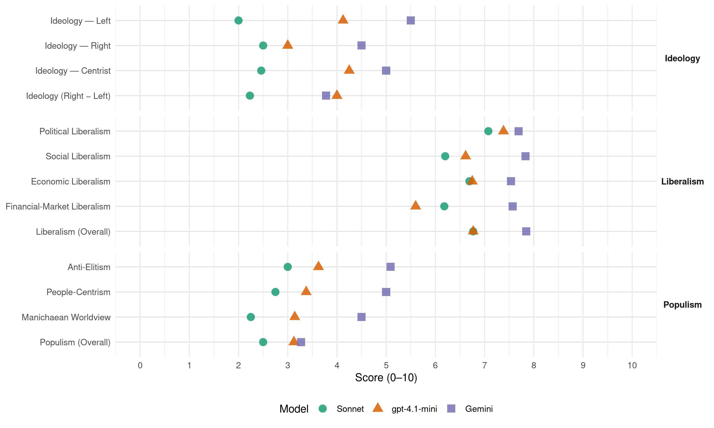

TS-LKD (Lithuania, 2016)
manifesto_id 88621_201610
Get full text: This site shows derived annotations and short verbatim quotes only. The full manifesto text is © Manifesto Project / WZB — obtain it via manifesto-project.wzb.eu using the manifesto_id above.
Headline scores
| Dimension | Sonnet | gpt-4.1-mini | Gemini |
|---|---|---|---|
| Populism (Overall) | 2.5 | 3.1 | 3.3 |
| Anti-Elitism | 3.0 | 3.6 | 5.1 |
| People-Centrism | 2.8 | 3.4 | 5.0 |
| Manichaean Worldview | 2.2 | 3.1 | 4.5 |
| Ideology (Right − Left) | 2.2 | 4.0 | 3.8 |
| Liberalism (Overall) | 6.8 | 6.8 | 7.8 |
| Political Liberalism | 7.1 | 7.4 | 7.7 |
| Social Liberalism | 6.2 | 6.6 | 7.8 |
| Economic Liberalism | 6.7 | 6.8 | 7.5 |
| Financial-Market Liberalism | 6.2 | 5.6 | 7.6 |
Evidence per dimension
Economic Liberalism
Gemini · score 8.0 · verified · chunk 1
“smulkiam ir vidutiniam verslui reikia palankesnių sąlygų”
3. Smulkiam ir vidutiniam verslui reikia palankesnių sąlygų finansuoti savo plėtrą
Gemini · score 9.0 · verified · chunk 2
“palankesnę aplinką rizikos kapitalo plėtrai”
Todėl per ateinančius ketverius metus sukursime palankesnę aplinką rizikos kapitalo plėtrai ir vystymuisi Lietuvoje – visų pirma keisime
Gemini · score 8.0 · verified · chunk 3
“mažinsime verslo priežiūros naštą”
reguliavimo normų supratimui ir prisitaikymui prie jų. Todėl mažinsime verslo priežiūros naštą ir keisime valstybės požiūrį į privataus
Gemini · score 8.0 · verified · chunk 4
“valstybės valdyme įdiegsime rinkos mechanizmus”
biudžeto planavimą bei ženkliai padidinsime viešą atskaitomybę; valstybės valdyme įdiegsime rinkos mechanizmus; 3) Įšaldysime valstybės tarnybos atlyginimų fondą
Gemini · score 8.0 · verified · chunk 5
“viešųjų paslaugų tiekimą galėtų būti žymiai plačiau įtrauktas privatus verslas”
Lietuvoje daugelyje panašių sričių į viešųjų paslaugų tiekimą galėtų būti žymiai plačiau įtrauktas privatus verslas, valstybei pasiliekant
Gemini · score 8.0 · verified · chunk 6
“rinkos konkurencija, o ne subsidijomis grįstas”
būtent toks, rinkos konkurencija, o ne subsidijomis grįstas, atsinaujinančių išteklių plėtros modelis turėtų būti laikomas
Gemini · score 7.0 · verified · chunk 7
“leisdami konkuruoti verslui”
didžiosios dalies Darbo biržai patikėtų paslaugų leisdami konkuruoti verslui.
Gemini · score 7.0 · verified · chunk 8
“žemės ūkio sektoriaus konkurencingumą”
Padidinsime žemės ūkio sektoriaus konkurencingumą – remsime naujausių technologijų diegimą ūkiuose;
Gemini · score 7.0 · verified · chunk 9
“realią bei dirbtinai nevaržomą konkurenciją tarp valstybinių ir privačių įstaigų”
Užtikrinsime realią bei dirbtinai nevaržomą konkurenciją tarp valstybinių ir privačių įstaigų sveikatos sektoriuje
Gemini · score 8.0 · verified · chunk 10
“grįsta, kiek įmanoma, rinkos konkurencija”
numatančio, jog ši plėtra turi būti grįsta, kiek įmanoma, rinkos konkurencija, o ne valstybės subsidijomis.
Gemini · score 8.0 · verified · chunk 11
“laisvos prekybos sutarties pasirašymo ir įsigaliojimo”
Remsime Europos Sąjungos ir JAV partnerystės gilinimą. Sieksime kuo spartesnio laisvos prekybos sutarties pasirašymo ir įsigaliojimo tarp JAV ir Europos Sąjungos. Visgi tuo pat metu pasisakysime prieš bet kokius bandymus dubliuoti NATO veiklą Europos Sąjungoje formate, tai laikydami funkcija, kuri turi būti paliekama specialiai gynybos tikslais įkurtam ir atitinkamus gebėjimus šioje srityje turinčiam aljansui.
Gemini · score 6.0 · verified · chunk 12
“monopolija neleistinai iškraipo rinką”
prisiima išskirtines paveldo tvarkymo kompetencijas, o tokia monopolija neleistinai iškraipo rinką.
Gemini · score 6.0 · verified · chunk 13
“skatinsime viešos- privačios partnerystės galimybes”
įvairius finansavimo instrumentus, skatinsime viešos- privačios partnerystės galimybes vystant kultūrinę infrastruktūrą
gpt-4.1-mini · score 7.0 · verified · chunk 1
“Lietuvos ūkį paversti gerai apmokamas darbo vietas kuriančia ir tarptautiniu lygiu konkurencinga”
…Mūsų svarbiausi siekiai iki 2021 metų yra: Lietuvos ūkį paversti gerai apmokamas darbo vietas kuriančia ir tarptautiniu lygiu konkurencinga ir eksportu paremta ekonomika…
gpt-4.1-mini · score 7.0 · verified · chunk 2
“verslui reikalingos palankesnės sąlygos tą daryti”
Lietuvoje investuoti svarstančiam verslui reikalingos palankesnės sąlygos tą daryti, naujoms įmonėms reikia daugiau galimybių finansuoti augimą; įmonėms būtina didinti investicijas į mokslinius tyrimus ir technologinę plėtrą, o tarptautinėse rinkose veikiančiam verslui praverstų intensyvesnė valstybės pagalba prekių ir paslaugų eksportui skatinti. Lietuvos nacionaliniai interesai ekonomikoje yra pritraukti daugiau užsienio investicijų, skatinti verslumą ir naujų ar patobulintų produktų bei paslaugų eksportui kūrimą.
gpt-4.1-mini · score 7.0 · verified · chunk 3
“pakilti iš šiandien Pasaulio Banko Doing Business indekse užimamos 20 vietos iki 10-osios”
Todėl užsibrėžiame konkretų ir aiškiai pamatuojamą tikslą – per 4 ateinančius metus pakilti iš šiandien Pasaulio Banko Doing Business indekse užimamos 20 vietos iki 10-osios. 6.1 Svarbiausia verslo priežiūros funkcija bus konsultuoti, ne bausti Iki šiol verslininkai ženklią savo pastangų, laiko ir finansinių išteklių dalį privalo skirti reguliavimo normų supratimui ir prisitaikymui prie jų.
gpt-4.1-mini · score 7.0 · verified · chunk 4
“užtikrinti adekvatų pedagoginio proceso finansavimą”
Kad kiekvienas mokytojas turėtų visas reikiamas priemones pasirinktiems ugdymo metodams įgyvendinti, užtikrinsime adekvatų pedagoginio proceso finansavimą. Todėl rūpestis kanceliarinėmis prekėmis, vadovėliais, laboratorijomis, informacinių technologijų ir ryšio priemonėmis bei kitomis didaktinėmis priemonėmis nebebus nuolatinis mokytojo darbo palydovas.
gpt-4.1-mini · score 7.0 · verified · chunk 5
“rinkos mechanizmus – dalį viešųjų paslaugų tiekimo perleisime į privačių tiekėjų žinią”
valstybės valdyme panaudosime rinkos mechanizmus – dalį viešųjų paslaugų tiekimo perleisime į privačių tiekėjų žinią, projektus įgyvendins viešos ir privačios partnerystės PPP pagrindu.
gpt-4.1-mini · score 7.0 · verified · chunk 6
“supaprastinsime pelno mokesčio mokėjimą smulkioms ir vidutinėms įmonėms”
Tikėdami smulkaus ir vidutinio verslo svarba ir atsižvelgdami į ypatingai palankias sąlygas valstybei valdyti iždo srautus: supaprastinsime pelno mokesčio mokėjimą smulkioms ir vidutinėms įmonėms, iš esmės atsisakydami avansinių šio mokesčio mokėjimų ir numatydami juos tik stambiausioms įmonėms,
gpt-4.1-mini · score 5.0 · verified · chunk 7
“Sukursime paskatų dirbti ilgiau sistemą, skatinančią vyresnio amžiaus žmonių užimtumą”
…pertvarkos gairės. Jos derina solidarią draudimo sistemą su nuosekliu pensijos kaupimu senatvei. Todėl užtikrinsime, kad valstybinio socialinio draudimo ir pensijų sistemos pertvarka būtų vykdoma atsižvelgiant į šiuos principus: 1) suma, gaunama iš Sodros ir antros pakopos pensijų, turėtų palaipsniui didėti iki ES vidutinio santykinio dydžio; 2) sistema turi būti išgryninta – solidarumo (bazinė pensija) ir socialinio draudimo dalys atskirtos… Sukursime paskatų dirbti ilgiau sistemą, skatinančią vyresnio amžiaus žmonių užimtumą…
gpt-4.1-mini · score 7.0 · verified · chunk 8
“remsime naujausių technologijų diegimą ūkiuose”
Padidinsime žemės ūkio sektoriaus konkurencingumą – remsime naujausių technologijų diegimą ūkiuose; 3) Sieksime Europos Sąjungos išmokų suvienodinimo su kitomis valstybėmis narėmis; prioritetizuosime ES išmokų skyrimą smulkiems ir vidutiniams šeimos ūkiams;
gpt-4.1-mini · score 6.0 · verified · chunk 9
“užtikrinsime realią bei dirbtinai nevaržomą konkurenciją tarp valstybinių ir privačių įstaigų”
Užtikrinsime realią bei dirbtinai nevaržomą konkurenciją tarp valstybinių ir privačių įstaigų sveikatos sektoriuje, taip paskatinant efektyvesnį paslaugų tiekimą ir jų kokybės gerinimą.
gpt-4.1-mini · score 7.0 · verified · chunk 10
“racionalų miško išteklių naudojimą ir maksimali finansinė nauda”
Valstybinės reikšmės miškų privatizavimas būtų ypač žalingas valstybei ir visuomenei. Efektyviai veikianti valstybinio miškų ūkio valdymo sistema būtina sąlyga tam, kad valstybiniuose miškuose būtų išlaikyti darnaus miškų ūkio principai suderinant ekonomines, socialines ir aplinkosaugines miškų funkcijas, užtikrintas racionalų miško išteklių naudojimą ir maksimali finansinė nauda (grąža) valstybei už šio turto naudojimą.
gpt-4.1-mini · score 7.0 · verified · chunk 11
“Vykdysime koordinuotą, aiškiai apibrėžtus prioritetus turinčią ekonominę diplomatiją, skirtą Lietuvos eksporto ir įvažiuojamojo turizmo skatinimui”
…Vykdysime koordinuotą, aiškiai apibrėžtus prioritetus turinčią ekonominę diplomatiją, skirtą Lietuvos eksporto ir įvažiuojamojo turizmo skatinimui, užsienio investicijų pritraukimui, darbo vietų Lietuvoje kūrimui bei tarptautinių ekonominių, infrastruktūrinių ir energetinių projektų įgyvendinimui šalyje ir regione…
gpt-4.1-mini · score 7.0 · verified · chunk 13
“kultūros finansavimo didinimo, susiedami kultūros finansavimą su kultūros sukuriamo produkto dalimi bendrajame šalies BVP”
Nuosekliai sieksime kultūros finansavimo didinimo, susiedami kultūros finansavimą su kultūros sukuriamo produkto dalimi bendrajame šalies BVP. Tuo tikslu būtina sukurti kultūros ekonominės naudos matavimo ir stebėsenos metodiką.
Sonnet · score 7.0 · verified · chunk 1
“laisvos rinkos”
laisvo asmens orumas prieš gniuždančią priespaudą… eksportu paremta ekonomika… konkurencinga
Sonnet · score 8.0 · verified · chunk 2
“palankias sąlygas eksportuojančiam verslui investuoti”
sukūrus patrauklias sąlygas eksportuojančiam verslui investuoti Lietuvos regionuose.
Sonnet · score 8.0 · verified · chunk 3
“skatinsime verslo savireguliaciją”
Remdamiesi JAV ir kai kurių Vakarų Europos valstybių patirtimi, skatinsime verslo savireguliaciją srityse, kur valstybinis reguliavimas yra nereikalingas
Sonnet · score 7.0 · verified · chunk 4
“valstybės valdyme įdiegsime rinkos mechanizmus”
Įtvirtinsime į rezultatus orientuotą valstybės valdymą ir biudžeto planavimą bei ženkliai padidinsime viešą atskaitomybę; valstybės valdyme įdiegsime rinkos mechanizmus
Sonnet · score 7.0 · verified · chunk 5
“rinkos mechanizmus – dalį viešųjų paslaugų tiekimo”
valstybės valdyme panaudosime rinkos mechanizmus – dalį viešųjų paslaugų tiekimo perleisime į privačių tiekėjų žinią
Sonnet · score 7.0 · verified · chunk 6
“rinkos sąlygomis, o ne valstybės subsidijomis grįstą”
užtikrinsime tolesnę rinkos sąlygomis, o ne valstybės subsidijomis grįstą atsinaujinančių energijos išteklių plėtrą
Sonnet · score 6.0 · verified · chunk 7
“leisdami konkuruoti verslui”
dėl didžiosios dalies Darbo biržai patikėtų paslaugų leisdami konkuruoti verslui
Sonnet · score 6.0 · verified · chunk 8
“Sukursime palankesnes sąlygas žemės ūkio produkciją eksportuojančiam verslui”
Pagrindiniai mūsų įsipareigojimai žemės ūkio sektoriuje: Sukursime palankesnes sąlygas žemės ūkio produkciją eksportuojančiam verslui – išplėsime eksporto rinkas
Sonnet · score 7.0 · verified · chunk 9
“realią bei dirbtinai nevaržomą konkurenciją”
Užtikrinsime realią bei dirbtinai nevaržomą konkurenciją tarp valstybinių ir privačių įstaigų sveikatos sektoriuje, taip paskatinant efektyvesnį paslaugų tiekimą
Sonnet · score 6.0 · verified · chunk 10
“plėtra turi būti grįsta, kiek įmanoma, rinkos konkurencija”
Skatindami tolesnę atsinaujinančių išteklių – saulės ir vėjo energijos – plėtrą laikysimės principo, numatančio, jog ši plėtra turi būti grįsta, kiek įmanoma, rinkos konkurencija, o ne valstybės subsidijomis.
Sonnet · score 7.0 · verified · chunk 11
“laisvos prekybos sutarties pasirašymo”
Sieksime kuo spartesnio laisvos prekybos sutarties pasirašymo ir įsigaliojimo tarp JAV ir Europos Sąjungos
Sonnet · score 6.0 · verified · chunk 12
“monopolija neleistinai iškraipo rinką”
tokia monopolija neleistinai iškraipo rinką. Neigiamai tegalima vertinti ir skubotą Lietuvos archyvų reformą
Sonnet · score 5.0 · verified · chunk 13
“Rinkoje atsiras didesnis naujų kūrinių poreikis”
Rinkoje atsiras didesnis naujų kūrinių poreikis, ir tai paskatins naujų kūrėjų atsiradimą
Financial-Market Liberalism
Gemini · score 7.0 · verified · chunk 1
“kredito įstaigos Lietuvoje patyrė reikšmingų nuostolių”
Po ekonominės krizės, kuomet kredito įstaigos Lietuvoje patyrė reikšmingų nuostolių, šalyje veikiantys bankai
Gemini · score 9.0 · verified · chunk 2
“supaprastinti rizikos kapitalo fondų įsteigimą”
Priimsime sprendimus, leisiančius supaprastinti rizikos kapitalo fondų įsteigimą bei įtvirtinsime lankstesnį akcijų traktavimą, numatant skirtingas
Gemini · score 8.0 · verified · chunk 3
“akcijų biržose listinguoti VVĮ akcijas”
aukštesni valdysenos ir skaidrumo standartai; 5) pradėję akcijų biržose listinguoti VVĮ akcijas. Tam patvirtinsime 2-5 metų dalies
Gemini · score 7.0 · verified · chunk 4
“kurti savo neliečiamo kapitalo fondus”
Lietuvos aukštąsias mokyklas Vakarų valstybių pavyzdžiu skatins kurti savo neliečiamo kapitalo fondus (angl. endowment funds). Į šiuos fondus universitetai bus skatinami investuoti lėšas
Gemini · score 7.0 · verified · chunk 8
“privačių pensijų kaupimo sistema, turi būti efektyvi”
antroji pakopa, privačių pensijų kaupimo sistema, turi būti efektyvi, veikla aiškiai reglamentuojama, pastovi ir skaidri;
Gemini · score 8.0 · verified · chunk 11
“privačių bankinių ir kitų kredito institucijų”
Ekonominėje programoje esame nurodę, jog planuojame sukurti specialų fondą, kuris, panaudojant Lietuvai skirtas ES lėšas, Europos strateginių investicijų fondo, privačių bankinių ir kitų kredito institucijų lėšas, turėtų beveik 7 mlrd. eurų lėšų daugkartinėms ir sugrįžtančioms investicijoms į įvairius valstybei svarbius projektus, įskaitant inovatyvius bei regioninius privataus verslo projektus.
Gemini · score 7.0 · verified · chunk 13
“kultūros sutelktinio finansavimo teisinį reglamentavimą”
vystymuisi. Sukursime kultūros sutelktinio finansavimo (angl. crowdfunding) teisinį reglamentavimą. Ši pasaulyje
gpt-4.1-mini · score 5.0 · verified · chunk 1
“bankai iki šiol vengia rizikos ir atsargiai teikia paskolas Lietuvos verslui”
…Po ekonominės krizės, kuomet kredito įstaigos Lietuvoje patyrė reikšmingų nuostolių, šalyje veikiantys bankai iki šiol vengia rizikos ir atsargiai teikia paskolas Lietuvos verslui. Didesnės paskolos dažniausiai išduodamos tik mažiausiai rizikingiems klientams…
gpt-4.1-mini · score 6.0 · verified · chunk 2
“Lietuvos strateginių investicijų fondą (LSIF), kuris padės sutelkti viešus ir privačius finansinius išteklius investicijoms vykdyti”
Dėl mūsų valstybei skirtos beveik 7 mlrd. Eur dydžio 2014-2020 m. ES paramos, per ateinančius ketverius metus Lietuva gali sukurti unikalų ilgalaikį finansinį instrumentą, kuriuo pasinaudojus bus paprasčiau pasiekti suplanuotų pokyčių šalies ekonomikoje. Dabartinis ES paramos laikotarpis yra paskutinė galimybė, kai panaudojant ES lėšas, valstybė gali sukurti tokį strateginio investavimo instrumentą. Per nuolat valstybei atgal sugrįžtančias investicijas šis instrumentas turi tapti ne vienkartine, o ilgalaike priemone tikslingai vystyti šalies ūkiui. Tam ketiname įsteigti Lietuvos strateginių investicijų fondą (LSIF), kuris padės sutelkti viešus ir privačius finansinius išteklius investicijoms vykdyti ir leis investuoti į pridėtinę vertę auginančius projektus valstybės išskirtose srityse.
gpt-4.1-mini · score 6.0 · verified · chunk 3
“supaprastinti dabartines bankroto procedūras bei sutrumpinti jų įgyvendinimui nustatytus laikotarpius”
Pasaulio banko kasmet atliekamas Doing Business tyrimas nurodo, jog Lietuva yra prastoje pozicijoje (70) pagal tai, kaip įstatymiškai reglamentuojamas įmonių bankrotas. Atsižvelgdami į šią situaciją, įsipareigojame ženkliai supaprastinti dabartines bankroto procedūras bei sutrumpinti jų įgyvendinimui nustatytus laikotarpius. Taip sudarysime palankesnes sąlygas ne tik įregistruoti verslą Lietuvoje (pagal šį rodiklį Lietuva tame pačiame globaliame Doing Business reitinge užima 8 vietą), bet ir, verslui nepasisekus, jį paprasčiau uždaryti ir išregistruoti.
gpt-4.1-mini · score 6.0 · verified · chunk 6
“Sėkmingas SGD terminalo projekto įgyvendinimas Lietuvai užtikrino stiprias starto pozicijas”
Sėkmingas SGD terminalo projekto įgyvendinimas Lietuvai užtikrino stiprias starto pozicijas siekiant tapti Baltijos jūros regiono gamtinių dujų prekybos centru (angl. LNG trading hub). Klaipėdoje įrengtas terminalas-saugykla jau dabar yra tinkamas dujų prekybai (importui ir eksportui) neatidėliotinų sandorių (angl. spot trading) rinkose.
gpt-4.1-mini · score 5.0 · verified · chunk 8
“ES paramos ir nacionalinio biudžeto lėšomis remsime smulkiojo ir vidutinio verslo įmonių kūrimąsi kaime”
ES paramos ir nacionalinio biudžeto lėšomis remsime smulkiojo ir vidutinio verslo įmonių kūrimąsi kaime, netradicinės žemdirbystės ir alternatyviųjų verslų plėtrą.
Sonnet · score 6.0 · verified · chunk 1
“užsienio kapitalui pritraukti”
sukuriant unikalų rekordinio dydžio ilgalaikį finansinį instrumentą valstybės strateginėms investicijoms vykdyti ir užsienio kapitalui pritraukti
Sonnet · score 7.0 · verified · chunk 2
“rizikos kapitalą, verslo akseleratorius”
Inovacijų rajonas sukuriamas sutelkiant stambias įmones, startuolius, rizikos kapitalą, verslo akseleratorius, universitetus
Sonnet · score 7.0 · verified · chunk 3
“listinguoti VVĮ akcijas”
pradėję akcijų biržose listinguoti VVĮ akcijas… duos naujos finansinės energijos akcijų biržai, kurios gyvybingumas yra svarbus plėtojant nebankinį verslo finansavimą.
Sonnet · score 6.0 · verified · chunk 4
“universitetams neliečiamo kapitalo fondus (angl. endowment funds)”
universitetams pasiūlysime motyvacinę sistemą, kuri Lietuvos aukštąsias mokyklas Vakarų valstybių pavyzdžiu skatins kurti savo neliečiamo kapitalo fondus (angl. endowment funds)
Sonnet · score 6.0 · verified · chunk 5
“kapitalo pajamų apmokestinimo sąlygas bei įvairias mokesčių lengvatas”
reikės peržiūrėti ir kitų gyventojų pajamų rūšių (individualios veiklos, kapitalo pajamų) apmokestinimo sąlygas bei įvairias mokesčių lengvatas
Sonnet · score 6.0 · verified · chunk 6
“kapitalo pajamų apmokestinimo sąlygas”
vykdant šią reformą, reikės peržiūrėti ir kitų gyventojų pajamų rūšių (individualios veiklos, kapitalo pajamų) apmokestinimo sąlygas bei įvairias mokesčių lengvatas
Sonnet · score 6.0 · verified · chunk 7
“finansų inžinerijos mechanizmus”
Pradėsime taikyti finansų inžinerijos mechanizmus (“Junkerio planas”, paskolos ir kiti šaltiniai)
Sonnet · score 6.0 · verified · chunk 8
“antroji pakopa, privačių pensijų kaupimo sistema, turi būti efektyvi”
antroji pakopa, privačių pensijų kaupimo sistema, turi būti efektyvi, veikla aiškiai reglamentuojama, pastovi ir skaidri
Sonnet · score 6.0 · verified · chunk 9
“sudarysime palankias sąlygas į sveikatos apsaugos sektorių investuoti privačias lėšas”
atsižvelgdami į šalies ūkio augimo tempus, įvertinsime galimybes didinti finansavimą sveikatos sistemai; sudarysime palankias sąlygas į sveikatos apsaugos sektorių investuoti privačias lėšas
Sonnet · score 6.0 · verified · chunk 11
“privačių bankinių ir kitų kredito institucijų lėšas”
panaudojant Lietuvai skirtas ES lėšas, Europos strateginių investicijų fondo, privačių bankinių ir kitų kredito institucijų lėšas
Sonnet · score 6.0 · verified · chunk 13
“sutelktinio finansavimo mechanizmus”
Įteisindami sutelktinio finansavimo mechanizmus, atsižvelgsime į specifinius kultūros finansavimo poreikius ir kursime mokestines paskatas
Political Liberalism
Gemini · score 9.0 · verified · chunk 1
“demokratija, krikščioniškos tradicijos, teisės viršenybė”
Vakarai yra civilizacija, kurios pagrindas yra demokratija, krikščioniškos tradicijos, teisės viršenybė ir teisingumo
Gemini · score 8.0 · verified · chunk 2
“politinės permainos laisvų rinkimų būdu”
nepriklausomų vietos gyventojų masė reikš, kad politinės permainos laisvų rinkimų būdu ilgainiui į gerą situaciją pakeis net ir tose
Gemini · score 7.0 · verified · chunk 3
“teismų kompetencijų ekonominių ginčų sprendimui”
investuotojams. Tai suvokdami, skirsime daugiau dėmesio teismų kompetencijų ekonominių ginčų sprendimui plėtrai. Siekdami sumažinti įstatyminio
Gemini · score 7.0 · verified · chunk 4
“pilietiškai asmenybei ir būtų palanki valstybės išlikimui”
tokia vertybių sistema, kuri leistų vystytis sąmoningai, atsakingai, kultūringai, pilietiškai asmenybei ir būtų palanki valstybės išlikimui ir klestėjimui.
Gemini · score 8.0 · verified · chunk 5
“realizuoti demokratinei santvarkai būtiną grįžtamąjį”
reikalauti iš valdžios viešos atskaitomybės, taip realizuojant demokratinei santvarkai būtiną grįžtamąjį ryšį.
Gemini · score 7.0 · verified · chunk 6
“paminant demokratinėse valstybėse priimtus principus”
komisijos energetikos srityje nesugebėjo nuveikti nieko prasmingo. Greičiau priešingai – dažniausiai jos buvo, paminant demokratinėse valstybėse priimtus principus, valdančiųjų naudojamos kaip politiniai įrankiai
Gemini · score 7.0 · verified · chunk 7
“Seimas ir Vyriausybė, priimdami sprendimus”
įgyvendinsime įstatymų leidybos praktiką, kad Seimas ir Vyriausybė, priimdami sprendimus, įvertintų jų poveikį
Gemini · score 8.0 · verified · chunk 8
“prieš įstatymą lygių piliečių bendruomenę”
visiems vienodas galimybes užtikrančią valstybę – prieš įstatymą lygių piliečių bendruomenę, kurioje dera pareiga šeimai
Gemini · score 8.0 · verified · chunk 9
“stiprinti, ginti ir puoselėti demokratišką vietos savivaldą”
Nors Lietuva yra įsipareigojusi stiprinti, ginti ir puoselėti demokratišką vietos savivaldą, tačiau pastarųjų metų tendencijos
Gemini · score 8.0 · verified · chunk 10
“saugoti žmogaus teises ir laisves”
stiprinamas jų gebėjimas saugoti žmogaus teises ir laisves, kartu užkertant kelią priešiškų
Gemini · score 8.0 · verified · chunk 11
“ugdyto demokratiją, kurtų visuomeninę, o ilgainiui”
Šio fondo paskirtis – sustiprinti Vilniaus regiono bendruomenes, kurios šiuo metu yra visiškai priklausomos nuo LLRA kontroliuojamų savivaldos institucijų politinės valios. Galimybės Vilniaus regiono bendruomenėms įgyvendinti nuo LLRA nepriklausomas iniciatyvas ugdytų demokratiją, kurtų visuomeninę, o ilgainiui ir politinę alternatyvą, pasirinkimo erdvę.
Gemini · score 8.0 · verified · chunk 12
“stiprinti demokratinio veikimo galimybes”
programines nuostatas, skirtas stiprinti demokratinio veikimo galimybes „užvaldytose” savivaldybėse.
Gemini · score 7.0 · verified · chunk 13
“valdžios bei administruojančių darinių atskaitomumą”
vertinimo kriterijais, bei valdžios bei administruojančių darinių atskaitomumą ir kontrolę prieš visuomenę
gpt-4.1-mini · score 8.0 · verified · chunk 1
“teisės viršenybės principas”
…Bene svarbiausia pamatinė Vakarų pasaulio vertybė – teisės viršenybės principas. Šis principas nurodo, kad siekiame teisinės valstybės, kurioje vadovaujamasi Konstitucija ir įstatymais, o ne asmens savivale. Tai reiškia, kad visi asmenys yra lygūs prieš įstatymą…
gpt-4.1-mini · score 7.0 · verified · chunk 2
“valstybės regionų sanglaudai skiramas finansavimas bus skiriamas atsižvelgiant į šias strategijas”
Visas valstybės regionų sanglaudai skiramas finansavimas bus skiriamas atsižvelgiant į šias strategijas. Kiekvienam regionino centrui atskirai parengtoje vystymo strategijoje bus numatyta: 1) konkreti specializacija – kokios gamybos ir kokių paslaugų tiekimo vystymui šiame regione bus skirtas pagrindinis dėmesys; 2) keliami tikslai, uždaviniai ir priemonės jų pasiekti bei aiškiai pamatuojami veiklos efektyvumo rodikliai (KPIs), leidžiantys įvertinti pasiektą pažangą; 3) trumpalaikės, vidutinio laikotarpio ir ilgalaikės regiono demografinės projekcijos; 4) pramonės centrui plėtoti reikalingų kompetencijų žemėlapis; 5) detalus regiono infrastruktūros vystymo planas.
gpt-4.1-mini · score 7.0 · verified · chunk 3
“demokratijos raida sietini su švietimo sistemos teikiamomis galimybėmis”
Lietuvos ekonomikos ir žmonių gerovės augimas, visuomenės sąmoningumas ir atvirumas, tautos gyvybingumas bei demokratijos raida sietini su švietimo sistemos teikiamomis galimybėmis. Lietuvos švietimo sistema turi sudaryti sąlygas formuotis laisvai, kritiškai mąstančiai, atsakingai ir kūrybingai asmenybei, gebančiai suvokti esminius žmogaus ir tautos egzistencinius klausimus, siekiančiai savo gyvenimo sėkmės ir svariai prisidedančiai prie atviros, modernios, sėkmingos Lietuvos kūrimo ir teigiamų pokyčių įvairiose visuomenės gyvenimo srityse.
gpt-4.1-mini · score 8.0 · verified · chunk 4
“valstybės valdymo politika – valstybės gebėjimas imtis reikalingų permainų”
Valstybės valdymo politika – valstybės gebėjimas imtis reikalingų permainų ir teikti savo piliečiams aukščiausios kokybės viešąsias paslaugas. Tai politika, kuri savo svarba nenusileidžia valstybės finansų ar energetikos politikai, tačiau Lietuvoje iki šiol sulaukia itin mažai dėmesio.
gpt-4.1-mini · score 8.0 · verified · chunk 5
“viešos atskaitomybės principus”
užtikrinti aukštą kokybės standartą, tokių reguliuotojų veikla turi būti tinkamai finansuojama, tuo pat metu remiantis aiškiai nustatytais viešos atskaitomybės principais.
gpt-4.1-mini · score 7.0 · verified · chunk 6
“biudžetus laikydamiesi šių teisės aktų”
Bendri viešųjų finansų tvarkymo pagrindai yra aiškiai apibrėžti Lietuvos įstatymuose, Europos Sąjungos teisyne bei tarptautiniuose šalies įsipareigojimuose, savaime suprantama, jog rengsime, tvirtinsime ir vykdysime biudžetus laikydamiesi šių teisės aktų.
gpt-4.1-mini · score 7.0 · verified · chunk 7
“įstatymų leidybos praktiką, kad Seimas ir Vyriausybė, priimdami sprendimus, įvertintų jų poveikį palankios šeimai aplinkos kūrimui”
…Todėl:įgyvendinsime įstatymų leidybos praktiką, kad Seimas ir Vyriausybė, priimdami sprendimus, įvertintų jų poveikį palankios šeimai aplinkos kūrimui ir gimstamumui (ypač svarbiausiuose įstatymuose, pavyzdžiui, Darbo kodekse); priimant į valstybės tarnybą motinystė ir tėvystė, kaip ir tarnyba kariuomenėje, bus vertinama kaip privalumas, suteikiantis pirmenybę esant vienodiems visiems kitiems išsilavinimo ar kvalifikaciniams rodikliams…
gpt-4.1-mini · score 7.0 · verified · chunk 8
“užtikrinsime politinių partijų finansavimo ir veiklos skaidrumą”
Pagrindiniai mūsų įsipareigojimai kovos su korupcija srityje:1) Užtikrinsime politinių partijų finansavimo ir veiklos skaidrumą; užkirsime kelią neteisėtam lobizmui, prekybai poveikiu ir politinei korupcijai; 2) Stiprinsime antikorupcinį švietimą; griežtinsime nuobaudas už korupcinio pobūdžio nusikaltimus; supaprastinsime korupcinių bylų nagrinėjimą; 3) Sugriežtinsime viešųjų pirkimų priežiūrą ir kontrolę;
gpt-4.1-mini · score 7.0 · verified · chunk 9
“stiprinsime vietos savivaldą, demokratiją savivaldos lygmenyje”
Įtvirtinsime demokratiją savivaldos lygmenyje – svarstysime galimybę įvesti merų kadencijas, stiprinsime vietos savivaldą, demokratiją savivaldos lygmenyje, svarstysime galimybę įvesti merų kadencijas, stiprinsime vietinės opozicijos pozicijas ir teises; 4) Padidinsime seniūnijų galias bei kompetencijų ribas, suteiksime galimybę seniūnus ir seniūnaičius rinkti tiesiogiai;
gpt-4.1-mini · score 8.0 · verified · chunk 10
“Svarbiausias NATO principas – solidarumas”
Tam reikia visų įmanomų atgrasymo priemonių, įskaitant ir branduolines. Svarbiausias NATO principas – solidarumas. Lietuva tuo bene labiausiai suinteresuota, todėl turi aktyviai dalyvauti, stengdamasi suprasti bei padėti spręsti kitoms NATO sąjungininkėms iškylančius saugumo iššūkius.
gpt-4.1-mini · score 7.0 · verified · chunk 11
“Lietuvos užsienio politiką kaip vieną iš pagrindinių nacionalinio lygmens politikos prioritetų, orientuotą, visų pirma, į Lietuvos saugumo didinimą”
…Svarbiausias mūsų prioritetas – įtvirtinti Lietuvos užsienio politiką kaip vieną iš pagrindinių nacionalinio lygmens politikos prioritetų, orientuotą, visų pirma, į Lietuvos saugumo didinimą strateginių iššūkių akivaizdoje…
gpt-4.1-mini · score 8.0 · verified · chunk 12
“stiprinti demokratinio veikimo galimybes”
ii) Opozicijos teisių stiprinimas Memorandume “Demokratijos erozija: iššūkiai ir sprendimai” esame nuosekliai išdėstę savo programines nuostatas, skirtas stiprinti demokratinio veikimo galimybes „užvaldytose” savivaldybėse.
gpt-4.1-mini · score 7.0 · verified · chunk 13
“valstybės paramą kultūros žiniasklaidai ir įtraukti į strateginius kultūros politikos dokumentus”
TS-LKD įsipareigoja didinti valstybės paramą kultūros žiniasklaidai ir įtraukti į strateginius kultūros politikos dokumentus skyrių, kuriame būtų suformuluoti valstybės lūkesčiai, koks vaidmuo kultūriniame gyvenime turėtų tekti kultūrinei žiniasklaidai ir kokie lūkesčiai su ja turėtų būti siejami.
Sonnet · score 8.0 · verified · chunk 1
“demokratija prieš autoritarizmą, teisės viršenybės principas”
pamatiniai civilizaciniai skirtumai: demokratija prieš autoritarizmą, teisės viršenybės principas ir pilietinė visuomenė
Sonnet · score 7.0 · verified · chunk 2
“politinės permainos laisvų rinkimų būdu”
politinės permainos laisvų rinkimų būdu ilgainiui į gerą situaciją pakeis net ir tose savivaldybėse
Sonnet · score 7.0 · verified · chunk 3
“apsaugota nuo politikų daromos įtakos”
Užtikrinsime, kad VVĮ holdingo vadovybė būtų formuojama iš profesionalų ir būtų apsaugota nuo politikų daromos įtakos
Sonnet · score 7.0 · verified · chunk 4
“studijų kokybės vertinimą atliekančios institucijos bus kiek įmanoma labiau atribotos nuo politikų daromos įtakos”
studijų kokybės vertinimą atliekančios institucijos bus kiek įmanoma labiau atribotos nuo politikų daromos įtakos. Todėl reikalinga institucinė pertvarka
Sonnet · score 8.0 · verified · chunk 5
“demokratijai būtiną grįžtamąjį ryšį”
realizuojant demokratinei santvarkai būtiną grįžtamąjį ryšį. Vyriausybė tai turės pateikti tokiu būdu, kad visuomenė, o tuo pačiu ir Seimas
Sonnet · score 7.0 · verified · chunk 6
“paminant demokratinėse valstybėse priimtus principus”
Greičiau priešingai – dažniausiai jos buvo, paminant demokratinėse valstybėse priimtus principus, valdančiųjų naudojamos kaip politiniai įrankiai siekiant atkeršyti buvusiai Vyriausybei
Sonnet · score 6.0 · verified · chunk 7
“Seimas ir Vyriausybė, priimdami sprendimus”
įgyvendinsime įstatymų leidybos praktiką, kad Seimas ir Vyriausybė, priimdami sprendimus, įvertintų jų poveikį palankios šeimai aplinkos kūrimui
Sonnet · score 7.0 · verified · chunk 8
“Įtvirtinsime žiniasklaidos nepriklausomumą nuo politinių ir oligarchinių įtakų”
Pagrindiniai mūsų įsipareigojimai kovos su korupcija srityje: Įtvirtinsime žiniasklaidos nepriklausomumą nuo politinių ir oligarchinių įtakų.
Sonnet · score 8.0 · verified · chunk 9
“Įtvirtinsime demokratiją savivaldos lygmenyje”
3) Įtvirtinsime demokratiją savivaldos lygmenyje – svarstysime galimybę įvesti merų kadencijas, stiprinsime vietinės opozicijos pozicijas ir teises
Sonnet · score 7.0 · verified · chunk 10
“žmogaus teises ir laisves”
Turi būti stiprinamas jų gebėjimas saugoti žmogaus teises ir laisves, kartu užkertant kelią priešiškų tarnybų veikimui.
Sonnet · score 7.0 · verified · chunk 11
“demokratinius ir žmogaus teisių institutus”
demilitarizuojant Lietuvos kaimynystę bei atgaivinant demokratinius ir žmogaus teisių institutus
Sonnet · score 7.0 · verified · chunk 12
“Opozicijos teisių stiprinimas”
ii) Opozicijos teisių stiprinimas Memorandume ‘Demokratijos erozija: iššūkiai ir sprendimai’ esame nuosekliai išdėstę savo programines nuostatas
Sonnet · score 6.0 · verified · chunk 13
“skaidrius lėšų skirstymo mechanizmus”
užtikrinsime skaidrius lėšų skirstymo mechanizmus, grįstus aiškiai suformuluotais… vertinimo kriterijais, bei valdžios… atskaitomumą ir kontrolę prieš visuomenę
Liberalism (Overall)
Gemini · score 8.0 · verified · chunk 1
“demokratija, krikščioniškos tradicijos, teisės viršenybė”
Vakarai yra civilizacija, kurios pagrindas yra demokratija, krikščioniškos tradicijos, teisės viršenybė ir teisingumo
Gemini · score 9.0 · verified · chunk 2
“palankesnę aplinką rizikos kapitalo plėtrai”
Todėl per ateinančius ketverius metus sukursime palankesnę aplinką rizikos kapitalo plėtrai ir vystymuisi Lietuvoje – visų pirma keisime
Gemini · score 8.0 · verified · chunk 3
“mažinsime verslo priežiūros naštą”
reguliavimo normų supratimui ir prisitaikymui prie jų. Todėl mažinsime verslo priežiūros naštą ir keisime valstybės požiūrį į privataus
Gemini · score 8.0 · verified · chunk 4
“valstybės valdyme įdiegsime rinkos mechanizmus”
biudžeto planavimą bei ženkliai padidinsime viešą atskaitomybę; valstybės valdyme įdiegsime rinkos mechanizmus; 3) Įšaldysime valstybės tarnybos atlyginimų fondą
Gemini · score 8.0 · verified · chunk 5
“viešųjų paslaugų tiekimą galėtų būti žymiai plačiau įtrauktas privatus verslas”
Lietuvoje daugelyje panašių sričių į viešųjų paslaugų tiekimą galėtų būti žymiai plačiau įtrauktas privatus verslas, valstybei pasiliekant
Gemini · score 8.0 · verified · chunk 6
“rinkos konkurencija, o ne subsidijomis grįstas”
būtent toks, rinkos konkurencija, o ne subsidijomis grįstas, atsinaujinančių išteklių plėtros modelis turėtų būti laikomas
Gemini · score 7.0 · verified · chunk 7
“leisdami konkuruoti verslui”
didžiosios dalies Darbo biržai patikėtų paslaugų leisdami konkuruoti verslui.
Gemini · score 8.0 · verified · chunk 8
“prieš įstatymą lygių piliečių bendruomenę”
visiems vienodas galimybes užtikrančią valstybę – prieš įstatymą lygių piliečių bendruomenę, kurioje dera pareiga šeimai
Gemini · score 8.0 · verified · chunk 9
“stiprinti, ginti ir puoselėti demokratišką vietos savivaldą”
Nors Lietuva yra įsipareigojusi stiprinti, ginti ir puoselėti demokratišką vietos savivaldą, tačiau pastarųjų metų tendencijos
Gemini · score 8.0 · verified · chunk 10
“grįsta, kiek įmanoma, rinkos konkurencija”
numatančio, jog ši plėtra turi būti grįsta, kiek įmanoma, rinkos konkurencija, o ne valstybės subsidijomis.
Gemini · score 8.0 · verified · chunk 11
“ugdyto demokratiją, kurtų visuomeninę, o ilgainiui”
Šio fondo paskirtis – sustiprinti Vilniaus regiono bendruomenes, kurios šiuo metu yra visiškai priklausomos nuo LLRA kontroliuojamų savivaldos institucijų politinės valios. Galimybės Vilniaus regiono bendruomenėms įgyvendinti nuo LLRA nepriklausomas iniciatyvas ugdytų demokratiją, kurtų visuomeninę, o ilgainiui ir politinę alternatyvą, pasirinkimo erdvę.
Gemini · score 7.0 · verified · chunk 12
“stiprinti demokratinio veikimo galimybes”
programines nuostatas, skirtas stiprinti demokratinio veikimo galimybes „užvaldytose” savivaldybėse.
Gemini · score 7.0 · verified · chunk 13
“kultūros sutelktinio finansavimo teisinį reglamentavimą”
vystymuisi. Sukursime kultūros sutelktinio finansavimo (angl. crowdfunding) teisinį reglamentavimą. Ši pasaulyje
gpt-4.1-mini · score 7.0 · verified · chunk 1
“teisės viršenybės principas”
…Bene svarbiausia pamatinė Vakarų pasaulio vertybė – teisės viršenybės principas. Šis principas nurodo, kad siekiame teisinės valstybės, kurioje vadovaujamasi Konstitucija ir įstatymais…
gpt-4.1-mini · score 6.0 · verified · chunk 2
“Lietuvos strateginių investicijų fondą (LSIF), kuris padės sutelkti viešus ir privačius finansinius išteklius investicijoms vykdyti”
Dėl mūsų valstybei skirtos beveik 7 mlrd. Eur dydžio 2014-2020 m. ES paramos, per ateinančius ketverius metus Lietuva gali sukurti unikalų ilgalaikį finansinį instrumentą, kuriuo pasinaudojus bus paprasčiau pasiekti suplanuotų pokyčių šalies ekonomikoje. Dabartinis ES paramos laikotarpis yra paskutinė galimybė, kai panaudojant ES lėšas, valstybė gali sukurti tokį strateginio investavimo instrumentą. Per nuolat valstybei atgal sugrįžtančias investicijas šis instrumentas turi tapti ne vienkartine, o ilgalaike priemone tikslingai vystyti šalies ūkiui. Tam ketiname įsteigti Lietuvos strateginių investicijų fondą (LSIF), kuris padės sutelkti viešus ir privačius finansinius išteklius investicijoms vykdyti ir leis investuoti į pridėtinę vertę auginančius projektus valstybės išskirtose srityse.
gpt-4.1-mini · score 7.0 · verified · chunk 3
“pakilti iš šiandien Pasaulio Banko Doing Business indekse užimamos 20 vietos iki 10-osios”
Todėl užsibrėžiame konkretų ir aiškiai pamatuojamą tikslą – per 4 ateinančius metus pakilti iš šiandien Pasaulio Banko Doing Business indekse užimamos 20 vietos iki 10-osios. 6.1 Svarbiausia verslo priežiūros funkcija bus konsultuoti, ne bausti Iki šiol verslininkai ženklią savo pastangų, laiko ir finansinių išteklių dalį privalo skirti reguliavimo normų supratimui ir prisitaikymui prie jų.
gpt-4.1-mini · score 7.0 · verified · chunk 4
“valstybės valdymo politika – valstybės gebėjimas imtis reikalingų permainų”
Valstybės valdymo politika – valstybės gebėjimas imtis reikalingų permainų ir teikti savo piliečiams aukščiausios kokybės viešąsias paslaugas. Tai politika, kuri savo svarba nenusileidžia valstybės finansų ar energetikos politikai, tačiau Lietuvoje iki šiol sulaukia itin mažai dėmesio.
gpt-4.1-mini · score 7.0 · verified · chunk 5
“viešos atskaitomybės principus”
užtikrinti aukštą kokybės standartą, tokių reguliuotojų veikla turi būti tinkamai finansuojama, tuo pat metu remiantis aiškiai nustatytais viešos atskaitomybės principais.
gpt-4.1-mini · score 7.0 · verified · chunk 6
“supaprastinsime pelno mokesčio mokėjimą smulkioms ir vidutinėms įmonėms”
Tikėdami smulkaus ir vidutinio verslo svarba ir atsižvelgdami į ypatingai palankias sąlygas valstybei valdyti iždo srautus: supaprastinsime pelno mokesčio mokėjimą smulkioms ir vidutinėms įmonėms, iš esmės atsisakydami avansinių šio mokesčio mokėjimų ir numatydami juos tik stambiausioms įmonėms,
gpt-4.1-mini · score 6.0 · verified · chunk 7
“įstatymų leidybos praktiką, kad Seimas ir Vyriausybė, priimdami sprendimus, įvertintų jų poveikį palankios šeimai aplinkos kūrimui”
…Todėl:įgyvendinsime įstatymų leidybos praktiką, kad Seimas ir Vyriausybė, priimdami sprendimus, įvertintų jų poveikį palankios šeimai aplinkos kūrimui ir gimstamumui (ypač svarbiausiuose įstatymuose, pavyzdžiui, Darbo kodekse); priimant į valstybės tarnybą motinystė ir tėvystė, kaip ir tarnyba kariuomenėje, bus vertinama kaip privalumas, suteikiantis pirmenybę esant vienodiems visiems kitiems išsilavinimo ar kvalifikaciniams rodikliams…
gpt-4.1-mini · score 6.0 · verified · chunk 8
“užtikrinsime politinių partijų finansavimo ir veiklos skaidrumą”
Pagrindiniai mūsų įsipareigojimai kovos su korupcija srityje:1) Užtikrinsime politinių partijų finansavimo ir veiklos skaidrumą; užkirsime kelią neteisėtam lobizmui, prekybai poveikiu ir politinei korupcijai; 2) Stiprinsime antikorupcinį švietimą; griežtinsime nuobaudas už korupcinio pobūdžio nusikaltimus; supaprastinsime korupcinių bylų nagrinėjimą; 3) Sugriežtinsime viešųjų pirkimų priežiūrą ir kontrolę;
gpt-4.1-mini · score 6.0 · verified · chunk 9
“stiprinsime vietos bendruomenes ir jų organizacijas, suteiksime teisę joms teikti viešąsias paslaugas savo bendruomenės teritorijoje”
Stiprinsime vietos bendruomenes ir jų organizacijas, suteiksime teisę joms teikti viešąsias paslaugas savo bendruomenės teritorijoje. Atkursime demokratišką bendruomenių finansavimo programą.
gpt-4.1-mini · score 7.0 · verified · chunk 10
“Svarbiausias NATO principas – solidarumas”
Tam reikia visų įmanomų atgrasymo priemonių, įskaitant ir branduolines. Svarbiausias NATO principas – solidarumas. Lietuva tuo bene labiausiai suinteresuota, todėl turi aktyviai dalyvauti, stengdamasi suprasti bei padėti spręsti kitoms NATO sąjungininkėms iškylančius saugumo iššūkius.
gpt-4.1-mini · score 7.0 · verified · chunk 11
“Svarbiausias mūsų prioritetas – įtvirtinti Lietuvos užsienio politiką kaip vieną iš pagrindinių nacionalinio lygmens politikos prioritetų”
…Svarbiausias mūsų prioritetas – įtvirtinti Lietuvos užsienio politiką kaip vieną iš pagrindinių nacionalinio lygmens politikos prioritetų, orientuotą, visų pirma, į Lietuvos saugumo didinimą strateginių iššūkių akivaizdoje…
gpt-4.1-mini · score 8.0 · verified · chunk 12
“stiprinti demokratinio veikimo galimybes”
ii) Opozicijos teisių stiprinimas Memorandume “Demokratijos erozija: iššūkiai ir sprendimai” esame nuosekliai išdėstę savo programines nuostatas, skirtas stiprinti demokratinio veikimo galimybes „užvaldytose” savivaldybėse.
gpt-4.1-mini · score 7.0 · verified · chunk 13
“TS-LKD įsipareigoja didinti valstybės paramą kultūros žiniasklaidai ir įtraukti į strateginius kultūros politikos dokumentus”
TS-LKD įsipareigoja didinti valstybės paramą kultūros žiniasklaidai ir įtraukti į strateginius kultūros politikos dokumentus skyrių, kuriame būtų suformuluoti valstybės lūkesčiai, koks vaidmuo kultūriniame gyvenime turėtų tekti kultūrinei žiniasklaidai ir kokie lūkesčiai su ja turėtų būti siejami.
Sonnet · score 7.0 · verified · chunk 1
“demokratija, krikščioniškos tradicijos, teisės viršenybė”
kurios pagrindas yra demokratija, krikščioniškos tradicijos, teisės viršenybė ir teisingumo principai
Sonnet · score 7.0 · verified · chunk 2
“palankesnę aplinką rizikos kapitalo plėtrai”
per ateinančius ketverius metus sukursime palankesnę aplinką rizikos kapitalo plėtrai ir vystymuisi Lietuvoje
Sonnet · score 7.0 · verified · chunk 3
“skatinsime verslo savireguliaciją”
Remdamiesi JAV ir kai kurių Vakarų Europos valstybių patirtimi, skatinsime verslo savireguliaciją srityse, kur valstybinis reguliavimas yra nereikalingas
Sonnet · score 7.0 · verified · chunk 4
“valstybės valdyme įdiegsime rinkos mechanizmus”
Įtvirtinsime į rezultatus orientuotą valstybės valdymą ir biudžeto planavimą bei ženkliai padidinsime viešą atskaitomybę; valstybės valdyme įdiegsime rinkos mechanizmus
Sonnet · score 7.0 · verified · chunk 5
“rinkos mechanizmus – dalį viešųjų paslaugų tiekimo”
valstybės valdyme panaudosime rinkos mechanizmus – dalį viešųjų paslaugų tiekimo perleisime į privačių tiekėjų žinią
Sonnet · score 7.0 · verified · chunk 6
“rinkos sąlygomis, o ne valstybės subsidijomis grįstą”
užtikrinsime tolesnę rinkos sąlygomis, o ne valstybės subsidijomis grįstą atsinaujinančių energijos išteklių plėtrą
Sonnet · score 6.0 · verified · chunk 7
“leisdami konkuruoti verslui”
dėl didžiosios dalies Darbo biržai patikėtų paslaugų leisdami konkuruoti verslui
Sonnet · score 7.0 · verified · chunk 8
“Įtvirtinsime žiniasklaidos nepriklausomumą nuo politinių ir oligarchinių įtakų”
Pagrindiniai mūsų įsipareigojimai kovos su korupcija srityje: Įtvirtinsime žiniasklaidos nepriklausomumą nuo politinių ir oligarchinių įtakų.
Sonnet · score 7.0 · verified · chunk 9
“Įtvirtinsime demokratiją savivaldos lygmenyje”
3) Įtvirtinsime demokratiją savivaldos lygmenyje – svarstysime galimybę įvesti merų kadencijas, stiprinsime vietinės opozicijos pozicijas ir teises
Sonnet · score 6.0 · verified · chunk 10
“plėtra turi būti grįsta, kiek įmanoma, rinkos konkurencija”
Skatindami tolesnę atsinaujinančių išteklių – saulės ir vėjo energijos – plėtrą laikysimės principo, numatančio, jog ši plėtra turi būti grįsta, kiek įmanoma, rinkos konkurencija, o ne valstybės subsidijomis.
Sonnet · score 7.0 · verified · chunk 11
“demokratijos, abipusės pagarbos, tarptautinės teisės normoms”
Santykiuose su Rusija liksime ištikimi demokratijos, abipusės pagarbos, tarptautinės teisės normoms, suverenumo
Sonnet · score 7.0 · verified · chunk 12
“Opozicijos teisių stiprinimas”
ii) Opozicijos teisių stiprinimas Memorandume ‘Demokratijos erozija: iššūkiai ir sprendimai’ esame nuosekliai išdėstę savo programines nuostatas
Sonnet · score 6.0 · verified · chunk 13
“skaidrius lėšų skirstymo mechanizmus”
užtikrinsime skaidrius lėšų skirstymo mechanizmus, grįstus aiškiai suformuluotais vertinimo kriterijais
Anti-Elitism
Gemini · score 6.0 · verified · chunk 1
“nomenklatūrinei kairei kartu su populistinėms partijoms”
Nomenklatūrinei kairei kartu su populistinėms partijoms valdant šalį paskutiniuosius ketverius metus
Gemini · score 6.0 · verified · chunk 2
“savivaldybių abejotino skaidrumo metodais užvaldę politikai”
Investuotojų atėjimas į regionus sukels ne tik ekonominių, bet ir politinių pasekmių. Dalį Lietuvos savivaldybių abejotino skaidrumo metodais užvaldę politikai ilgus metus postuose išsilaiko sėkmingai kurdami
Gemini · score 3.0 · verified · chunk 3
“politikų daroma įtaka valstybės įmonių valdymui”
Europos Komisija bei EBPO. Abiejų tarptautinių institucijų vertinimu, politikų daroma įtaka valstybės įmonių valdymui Lietuvoje yra viena pagrindinių
Gemini · score 6.0 · verified · chunk 4
“politikoje dominuoja prastai išsilavinę, reikiamos patirties ir gebėjimų neturintys politikai”
Priešingai nei Singapūro ar kitų mažų sėkmingų valstybių atveju, Lietuvos politikoje dominuoja prastai išsilavinę, reikiamos patirties ir gebėjimų neturintys politikai bei aukšto rango valstybės pareigūnai.
Gemini · score 7.0 · verified · chunk 5
“dominuoja prastai išsilavinę, reikiamos patirties”
Lietuvos politikoje dominuoja prastai išsilavinę, reikiamos patirties ir gebėjimų neturintys politikai
Gemini · score 5.0 · verified · chunk 6
“interesų grupių įtaka”
lengvatas sunku pagrįsti kitkuo nei interesų grupių įtaka), tiek efektyvumo (kai kurie mokesčiai
Gemini · score 3.0 · verified · chunk 7
“Valdantiesiems giriantis augančia ekonomika”
balsuoja ne tik biuleteniais, bet ir kojomis. Valdantiesiems giriantis augančia ekonomika, mūsų šalyje toliau fiksuojama didžiausia
Gemini · score 6.0 · verified · chunk 8
“atviro nepotizmo bei korupcijos atvejų”
vadovų veikla žemdirbiai prarado ne tik dėl prastos jų kompetencijos, bet ir dėl viešojoje erdvėje plačiai nuskambėjusių atviro nepotizmo bei korupcijos atvejų.
Gemini · score 4.0 · verified · chunk 9
“apsaugos savivaldą nuo „užvaldymo” tendencijų”
padės užtikrinti politinę kontrolę, apsaugos savivaldą nuo „užvaldymo” tendencijų ir leis realiai valdžią priartinti
Gemini · score 6.0 · verified · chunk 11
“vietos valdžia dėl politinės konkurencijos stokos”
Antra, Vilniaus krašto ekonominę padėtį blogina siena su Baltarusija. Dėl savo nepralaidumo ji nukirto daugybę natūralių prekybinių kelių. Diskusijose apie Vilniaus krašto ekonominę padėtį ir strategijas jai gerinti dažnai iškeliama mintis, kad Vilniaus kraštas galėtų tapti prekybinio kelio su Baltarusija logistikos centru/…/. Trečia, prie dabartinių ekonominių problemų prisideda vietos valdžia, kuri skiria mažai dėmesio krašto ekonominei gerovei. Iš dalies tai lemia kompetencijos stoka. Didžioji dalis LLRA politikų iš Vilniaus ir Šalčininkų rajonų turi dar sovietmečiu įgytą išsilavinimą ir menkai išmano, kaip pritraukti investicijų ar tobulinti infrastruktūrą. Kita vertus, vietos valdžia dėl politinės konkurencijos stokos neturi jokių paskatų rimtai užsiimti ekonomine gerove.
Gemini · score 4.0 · verified · chunk 12
“nepriklausomos nuo politinių LLRA manipuliacijų”
stiprinti švietimo institucijų, kurios būtų nepriklausomos nuo politinių LLRA manipuliacijų, tinklą Vilniaus regione
gpt-4.1-mini · score 4.0 · verified · chunk 1
“Kai partijos siekia valdžios kaip priemonės pasipelnymui”
…piliečiai mato, kad valdžia dirba jų labui, todėl atsiranda tarpusavio pasitikėjimas. Kai partijos siekia valdžios kaip priemonės pasipelnymui, ieško būdų apeiti įstatymus ir kurti nesistemiškus, tam tikros grupės interesus įtvirtinančius teisės aktus, tauta praranda pasitikėjimą valdžia, o ši bando jį „susigrąžinti“ populistiniais pažadais. Atsidūrusios tokiame užburtame rate valstybės neišbrenda iš skurdo…
gpt-4.1-mini · score 3.0 · verified · chunk 2
“politikų malonės nepriklausančių žmonių”
Dalį Lietuvos savivaldybių abejotino skaidrumo metodais užvaldę politikai ilgus metus postuose išsilaiko sėkmingai kurdami ir palaikydami klientelistinius ryšius su vietos gyventojais. Tai daroma viešąjame sektoriuje kuriant vis daugiau nereikalingų darbo vietų gyventojams įdarbinti ir taip užsitikrinant šių žmonių politinį lojalumą. Trūkstant gerų darbo vietų privačiame sektoriuje, darbingo amžiaus vietiniai žmonės tiesiog emigruoja arba bando įsidarbinti savivaldybės administracijoje, įstaigose ar įmonėse. Dėl riboto darbo vietų skaičiaus ar dėl netinkamų politinių pažiūrų valstybinių darbo vietų negavę žmonės tampa priklausomi nuo savivaldybės administracijos skirstomų socialinių išmokų. Taip vietos demokratijos problemos ilgainiui virsta socioekonominėmis – daugėja valstybės išlaikytinių, didėja regioninė atskirtis, krenta darbo etikos standartai, mažėja pasitikėjimas valstybe ir demokratija apskritai. Šią padėtį iš esmės gali pakeisti į regionų centrus nukreiptos investicijos. Į regionus atėjus naujas darbo vietas kuriančiam verslui, užvaldytose savivaldybėse atsiras daugiau nuo vietos politikų malonės nepriklausančių žmonių.
gpt-4.1-mini · score 3.0 · verified · chunk 5
“prastai išsilavinę, reikiamos patirties ir gebėjimų neturintys politikai”
Lietuvos politikoje dominuoja prastai išsilavinę, reikiamos patirties ir gebėjimų neturintys politikai bei aukšto rango valstybės pareigūnai.
gpt-4.1-mini · score 3.0 · verified · chunk 6
“kai kurias taikomas lengvatas sunku pagrįsti kitkuo nei interesų grupių įtaka”
didelę mokesčių naštos dalį neša mažų ir vidutinių pajamų gavėjai, o kai kurias taikomas lengvatas sunku pagrįsti kitkuo nei interesų grupių įtaka), tiek efektyvumo (kai kurie mokesčiai ženkliai iškraipo mokėtojų elgseną
gpt-4.1-mini · score 3.0 · verified · chunk 7
“Besitvenkiančio visuomenės pykčio reiškinys šiandien neramina tiek kairiuosius, tiek ir dešiniuosius Vakarų politikus”
…matomos daugelyje Vakarų valstybių, neišskiriant ir Lietuvos. Tradiciškai stabiliose Vakarų demokratijose JAV ir Jungtinėje Karalystėje šios slinktys pasireiškia ženklia visuomenės parama kraštutiniams populistams ar tokiais sprendimais, kaip Brexit. Savo ruožtu Lietuvoje pastarasis reiškinys yra įgavęs kitoką formą – nerimą dėl ateities ir pyktį dėl dabartinės savo padėties jaučiantys žmonės iš tiesų balsuoja ne tik biuleteniais, bet ir kojomis. Valdantiesiems giriantis augančia ekonomika, mūsų šalyje toliau fiksuojama didžiausia ES darbingų žmonių emigracija. Besitvenkiančio visuomenės pykčio reiškinys šiandien neramina tiek kairiuosius, tiek ir dešiniuosius Vakarų politikus bei viešosios politikos ekspertus ir mokslininkus ir…
gpt-4.1-mini · score 3.0 · verified · chunk 8
“nepakantumą korupcijai didinančias ir pilietinį aktyvumą skatinančias priemones”
Akivaizdu, kad būtinos priemonės didinti ir formuoti nepakantumą korupcijai, skatinant pilietinį aktyvumą tobulinant pranešėjų apsaugos sistemą, vykdant kitas nepakantumą korupcijai didinančias ir pilietinį aktyvumą skatinančias priemones ir veiksmus.
gpt-4.1-mini · score 5.0 · verified · chunk 9
“korupcinis elgesys tiesiogiai susijęs”
Sveikatos priežiūra ir socialinė apsauga Visuomenė kartais pateisina kyšio davimą šiame sektoriuje, nes tariamai norimos paslaugos gaunamos greičiau. Tačiau tai ypač jautri sritis, kurioje korupcinis elgesys tiesiogiai susijęs ir lemia žmonių sveikatą bei gyvybę, todėl turėtų būti apskritai netoleruojamas. Be to, išlieka korupcijos rizika dėl kai kurių gydymo įstaigų vadovų interesų konfliktų naudojantis ryšiais su vaistais ar medicinos priemonėmis prekiaujančiomis privačiomis bendrovėmis, dėl nepagrįstų siuntimų į reabilitacijos įstaigas, slaugos skyrimo, nedarbingumo lygio nustatymo ir kt.
gpt-4.1-mini · score 5.0 · verified · chunk 11
“LLRA bando kurti įtampą tarp lietuvių ir kitų tautybių Lietuvos Respublikos piliečių, lygiagrečiai stiprindama klientelizmu ir nepotizmu paremtą savo struktūrą”
…dominuojanti politinė jėga – Lietuvos lenkų rinkimų akcija (toliau LLRA) bando kurti įtampą tarp lietuvių ir kitų tautybių Lietuvos Respublikos piliečių, lygiagrečiai stiprindama klientelizmu ir nepotizmu paremtą savo struktūrą visuose pietryčių Lietuvos rajonuose. LLRA nėra suinteresuota teigiamais pokyčiais regione…
Sonnet · score 5.0 · mixed · chunk 1
“populistinių politikų lozungams”
lengvai pasiduoda neracionaliam pykčiui ir populistinių politikų lozungams. Tai kuria užburtą
Sonnet · score 3.0 · verified · chunk 2
“abejotino skaidrumo metodais užvaldę politikai”
Dalį Lietuvos savivaldybių abejotino skaidrumo metodais užvaldę politikai ilgus metus postuose išsilaiko sėkmingai kurdami ir palaikydami klientelistinius ryšius
Sonnet · score 2.0 · verified · chunk 3
“politikų daroma įtaka valstybės įmonių valdymui”
Abiejų tarptautinių institucijų vertinimu, politikų daroma įtaka valstybės įmonių valdymui Lietuvoje yra viena pagrindinių mūsų VVĮ neefektyvumo priežasčių.
Sonnet · score 3.0 · verified · chunk 4
“prastai išsilavinę, reikiamos patirties ir gebėjimų neturintys politikai”
Lietuvos politikoje dominuoja prastai išsilavinę, reikiamos patirties ir gebėjimų neturintys politikai bei aukšto rango valstybės pareigūnai.
Sonnet · score 4.0 · mixed · chunk 5
“prastai išsilavinę, reikiamos patirties ir gebėjimų neturintys politikai”
Lietuvos politikoje dominuoja prastai išsilavinę, reikiamos patirties ir gebėjimų neturintys politikai bei aukšto rango valstybės pareigūnai
Sonnet · score 4.0 · verified · chunk 6
“valdančiųjų naudojamos kaip politiniai įrankiai”
šios komisijos energetikos srityje nesugebėjo nuveikti nieko prasmingo. Greičiau priešingai – dažniausiai jos buvo, paminant demokratinėse valstybėse priimtus principus, valdančiųjų naudojamos kaip politiniai įrankiai siekiant atkeršyti buvusiai Vyriausybei
Sonnet · score 2.0 · verified · chunk 7
“augantis populistinių jėgų vaidmuo”
stiprėjančios kraštutinės kairės bei dešinės partijos, augantis populistinių jėgų vaidmuo nacionaliniu ir net tarptautiniu mastu formuojant politinę darbotvarkę
Sonnet · score 6.0 · verified · chunk 8
“nekompetentingas, idėjų stokojantis ir dažnai pasyvus kairiųjų valdymas”
Galime atsakingai teigti, kad XVI-oji Vyriausybė deramo dėmesio Lietuvos žemės ūkio plėtrai neskyrė. Nekompetentingas, idėjų stokojantis ir dažnai pasyvus kairiųjų valdymas vienam iš svarbiausių Lietuvos ekonomikos sektorių neabejotinai turės ilgalaikių neigiamų padarinių.
Sonnet · score 3.0 · verified · chunk 9
“socialdemokratų vadovaujama vyriausybė net ir pakankamai spartaus ekonomikos augimo”
Tenka konstatuoti, jog socialdemokratų vadovaujama vyriausybė net ir pakankamai spartaus ekonomikos augimo sąlygomis nesugebėjo reikšmingai padidinti finansavimo
Sonnet · score 2.0 · verified · chunk 10
“dabartinės A. Butkevičiaus vadovaujamos Vyriausybės”
Tenka konstatuoti, jog dabartinės A. Butkevičiaus vadovaujamos Vyriausybės ir, konkrečiai, Aplinkos ministerijos vadovybės, nesisteminga politika ir neveiklumas ne tik neišsprendė, bet ir pagilino šio sektoriaus problemas.
Sonnet · score 3.0 · verified · chunk 11
“twitterinės” diplomatijos pareiškimais”
Užsienio reikalų ministerijos veikloje nebebus apsiribojama vien daugiašalės diplomatijos formatais Briuselyje bei „twitterinės” diplomatijos pareiškimais
Sonnet · score 3.0 · verified · chunk 12
“dabartinės Vyriausybės veiklą kultūros srityje vertinti kaip stagnacinę”
Esame priversti dabartinės Vyriausybės veiklą kultūros srityje vertinti kaip stagnacinę ir nepateisinamai aplaidžią.
Sonnet · score 2.0 · verified · chunk 13
“labai daug kritikos, kuri susijusi pirmiausia”
šiandien šis Fondas sulaukia labai daug kritikos, kuri susijusi pirmiausia su tuo, kad jam tenka skirstyti paramą
Ideology — Centrist
Gemini · score 5.0 · verified · chunk 2
“savivaldybių abejotino skaidrumo metodais užvaldę politikai”
Investuotojų atėjimas į regionus sukels ne tik ekonominių, bet ir politinių pasekmių. Dalį Lietuvos savivaldybių abejotino skaidrumo metodais užvaldę politikai ilgus metus postuose išsilaiko sėkmingai kurdami
Gemini · score 5.0 · verified · chunk 4
“politikoje dominuoja prastai išsilavinę, reikiamos patirties ir gebėjimų neturintys politikai”
Priešingai nei Singapūro ar kitų mažų sėkmingų valstybių atveju, Lietuvos politikoje dominuoja prastai išsilavinę, reikiamos patirties ir gebėjimų neturintys politikai bei aukšto rango valstybės pareigūnai.
Gemini · score 6.0 · verified · chunk 5
“dominuoja prastai išsilavinę, reikiamos patirties”
Lietuvos politikoje dominuoja prastai išsilavinę, reikiamos patirties ir gebėjimų neturintys politikai
Gemini · score 5.0 · verified · chunk 8
“realiai Lietuvos žmonių gyvenimus palengvinantiems”
didžiausią dėmesį skyrėme praktiškiems ir realiai Lietuvos žmonių gyvenimus palengvinantiems sprendimams.
Gemini · score 4.0 · verified · chunk 9
“sugrąžinti demokratišką, savarankišką ir bendruomenišką savivaldą Lietuvos žmonėms”
šiame dokumente aptartas nuostatas ir konkrečias priemones, yra pasiryžusi sugrąžinti demokratišką, savarankišką ir bendruomenišką savivaldą Lietuvos žmonėms.
gpt-4.1-mini · score 6.0 · verified · chunk 1
“Turime atsigręžti į tyliąją ir darbščiąją Lietuvos žmonių daugumą”
…Teisinga, galimybių kupina ir pasididžiavimo verta Lietuva Turime atsigręžti į tyliąją ir darbščiąją Lietuvos žmonių daugumą. Į sąžiningai dirbančius ir dirbusius piliečius…
gpt-4.1-mini · score 5.0 · verified · chunk 2
“regionų politikos tikslas – sparčiai ir pastebimai pakelti visos Lietuvos gyventojų gerovę”
Pagrindinis mūsų siūlomos naujos regionų politikos tikslas – sparčiai ir pastebimai pakelti visos Lietuvos gyventojų gerovę. Tai įmanoma padaryti sukūrus patrauklias sąlygas eksportuojančiam verslui investuoti Lietuvos regionuose. Naujos įmonės dalį reikalingų žaliavų ar paslaugų pirks iš vietos tiekėjų ir didins jų pajamas. Pastarieji žaliavas importuos ir papildomai pirks iš tarpinių tiekėjų – kitų Lietuvos įmonių, o šios savo ruožtu iš trečios grandies tiekėjų ir t. t. Taip bus kuriamos papildomos (pirminės, antrinės, tretinės ir t.t.) vertės grandinės. Kartu, dėl padidėjusios gyventojų perkamosios galios, plėtosis vietos paslaugų sektoriai, kuriuose taip pat bus kuriamos naujos darbo vietos. Šie pokyčiai regionuose sukurs realią konkurencinę aplinką ir šiuo metu veikiantį vietos verslą įgalins kelti darbo užmokestį bei investuoti į technologinį atsinaujinimą.
gpt-4.1-mini · score 4.0 · verified · chunk 5
“valstybės valdymas yra ypatingai svarbi viešosios politikos dalis”
bendra mūsų nuostata yra aiški – valstybės valdymas yra ypatingai svarbi viešosios politikos dalis, turinti tokią pat reikšmę kaip finansai, energetika ar gynyba.
gpt-4.1-mini · score 5.0 · verified · chunk 6
“mokesčius visada moka žmonės”
atus balansas tarp mokesčių lygio ir paslaugų kokybės, juolab, kad mokesčius visada moka žmonės. Net tada, kai mokesčiai nustatomi “įmonėms”,
gpt-4.1-mini · score 4.0 · verified · chunk 7
“Valstybė, kaip viena didelė bendruomenė, privalo užtikrinti lygias galimybes visiems savo piliečiams”
…Tačiau esame įsitikinę, kad valstybė, kaip viena didelė bendruomenė, privalo užtikrinti lygias galimybes visiems savo piliečiams. Tai – vienas kertinių visuomenės teisingumo ir socialinės darnos pamatų. Lietuva išgyvena demografinę krizę Lietuva išgyvena demografinę krizę: per 26 atkurtos Nepriklausomybės metus mirusiųjų skaičius net 200 tūkst. lenkia gimusiųjų…
gpt-4.1-mini · score 3.0 · verified · chunk 8
“visiems vienodas galimybes užtikrinančią valstybę – prieš įstatymą lygių piliečių bendruomenę”
Europietišką gerovę suprantame ne tik kaip naujas gerai apmokamas darbo vietas ar spartų ūkio augimą, tačiau ir kaip visiems vienodas galimybes užtikrinančią valstybę – prieš įstatymą lygių piliečių bendruomenę, kurioje dera pareiga šeimai, pagarba darbui ir pagalba savimi sunkiau pasirūpinančiam artimui.
gpt-4.1-mini · score 5.0 · verified · chunk 9
“įtraukiant piliečius į valdymo procesus, didinti valstybės”
Reikia modernizuoti viešąjį sektorių ir, įtraukiant piliečius į valdymo procesus, didinti valstybės ir savivaldybių įstaigų veiklos skaidrumą bei atvirumą, tuo pat vykdant vis didesnį viešojo sektoriaus paslaugų perkėlimą į elektroninę erdvę.
gpt-4.1-mini · score 2.0 · verified · chunk 11
“Lietuvos tautinių bendrijų politika turi remtis lietuvių tautos kaip politinės tautos suvokimu”
…Lietuvos tautinių bendrijų politika turi remtis lietuvių tautos kaip politinės tautos suvokimu. Pagal šį suvokimą kiekviena Lietuvoje gyvenanti tautinė bendrija verta tapti integralia lietuvių (arba Lietuvos) politinės tautos dalimi…
Sonnet · score 4.0 · verified · chunk 1
“paprastam žmogui”
deklaruojamas nenuilstamas dėmesys ir pagalba paprastam žmogui, socialinės lygybės didinimas
Sonnet · score 3.0 · verified · chunk 2
“sparčiai ir pastebimai pakelti visos Lietuvos gyventojų gerovę”
Pagrindinis mūsų siūlomos naujos regionų politikos tikslas – sparčiai ir pastebimai pakelti visos Lietuvos gyventojų gerovę.
Sonnet · score 2.0 · verified · chunk 3
“laimi visi – ir investuoti planuojantys verslininkai”
Tai reikš, kad laimi visi – ir investuoti planuojantys verslininkai, ir didesnį atlyginimą norintys uždirbti Lietuvos žmonės.
Sonnet · score 2.0 · verified · chunk 4
“politiniais išskaičiavimais grįstus paskyrimus”
Ši sistema skatina politiniais išskaičiavimais grįstus paskyrimus. Paskirti direktoriai dažnai nėra profesionalūs švietimo srities vadybininkai
Sonnet · score 4.0 · verified · chunk 5
“valstybės valdymas turi atitikti aukščiausius Vakarų valstybių standartus”
valstybės valdymas ir Lietuvoje atitiktų aukščiausius Vakarų valstybių standartus: jis turi būti lankstus, efektyvus
Sonnet · score 3.0 · verified · chunk 6
“mokesčius visada moka žmonės”
atus balansas tarp mokesčių lygio ir paslaugų kokybės, juolab, kad mokesčius visada moka žmonės. Net tada, kai mokesčiai nustatomi “įmonėms”, juos galiausiai sumoka žmonės
Sonnet · score 2.0 · verified · chunk 7
“valstybė, kaip viena didelė bendruomenė”
esame įsitikinę, kad valstybė, kaip viena didelė bendruomenė, privalo užtikrinti lygias galimybes visiems savo piliečiams
Sonnet · score 3.0 · verified · chunk 8
“dialogas, diskusija ir bendradarbiavimas”
Tikime, jog dialogas, diskusija ir bendradarbiavimas – aspektai, kurių pasigendama šios Vyriausybės laikotarpiu – yra būtina sąlyga
Sonnet · score 2.0 · verified · chunk 9
“valdžią priartinti prie gyventojų”
leis realiai valdžią priartinti prie gyventojų. Būtent vietinės demokratijos stiprinimą
Sonnet · score 1.0 · verified · chunk 10
“Svarbiausias NATO principas – solidarumas”
Svarbiausias NATO principas – solidarumas. Lietuva tuo bene labiausiai suinteresuota, todėl turi aktyviai dalyvauti.
Sonnet · score 2.0 · verified · chunk 11
“nacionalinių interesų gynybos linija”
paverstume Lietuvos diplomatiją realiai veikiančia priešakine valstybės nacionalinių interesų gynybos linija
Sonnet · score 2.0 · verified · chunk 12
“realaus plano ir stiprios intelektualios lyderystės”
šiai politikai reikia ne skambių žodžių ar neįgyvendinamų pažadų, o realaus plano ir stiprios intelektualios lyderystės.
Sonnet · score 2.0 · verified · chunk 13
“Sekdami Europos Sąjugos valstybių gerąja patirtimi”
Sekdami Europos Sąjugos valstybių gerąja patirtimi, įsipareigojame saugoti savo kultūrinį nematerialųjį paveldą
Ideology — Left
Gemini · score 6.0 · verified · chunk 6
“mažų ir vidutinių pajamų gavėjai”
didelę mokesčių naštos dalį neša mažų ir vidutinių pajamų gavėjai, o kai kurias taikomas lengvatas
Gemini · score 5.0 · verified · chunk 7
“skurdo ir galimybių atskirties rato”
vaikai taip pat turi tik labai menkas galimybes išsiveržti iš uždaro skurdo ir galimybių atskirties rato.
gpt-4.1-mini · score 4.0 · verified · chunk 1
“Nomenklatūrinei kairei kartu su populistinėms partijoms valdant šalį”
…Nomenklatūrinei kairei kartu su populistinėms partijoms valdant šalį paskutiniuosius ketverius metus, o per visą nepriklausomybės laikotarpį praleidus už valstybės vairo daugiau nei 17 metų, nuolat yra deklaruojamas nenuilstamas dėmesys ir pagalba paprastam žmogui, socialinės lygybės didinimas, skurdo mažinimas. Tačiau realybėje tebeturime labai mažą ir silpną viduriniąją klasę…
gpt-4.1-mini · score 4.0 · verified · chunk 2
“daugėja valstybės išlaikytinių, didėja regioninė atskirtis”
Dalį Lietuvos savivaldybių abejotino skaidrumo metodais užvaldę politikai ilgus metus postuose išsilaiko sėkmingai kurdami ir palaikydami klientelistinius ryšius su vietos gyventojais. Tai daroma viešąjame sektoriuje kuriant vis daugiau nereikalingų darbo vietų gyventojams įdarbinti ir taip užsitikrinant šių žmonių politinį lojalumą. Trūkstant gerų darbo vietų privačiame sektoriuje, darbingo amžiaus vietiniai žmonės tiesiog emigruoja arba bando įsidarbinti savivaldybės administracijoje, įstaigose ar įmonėse. Dėl riboto darbo vietų skaičiaus ar dėl netinkamų politinių pažiūrų valstybinių darbo vietų negavę žmonės tampa priklausomi nuo savivaldybės administracijos skirstomų socialinių išmokų. Taip vietos demokratijos problemos ilgainiui virsta socioekonominėmis – daugėja valstybės išlaikytinių, didėja regioninė atskirtis, krenta darbo etikos standartai, mažėja pasitikėjimas valstybe ir demokratija apskritai.
gpt-4.1-mini · score 3.0 · verified · chunk 5
“socialinių skirtumų ir skurdo įveikimas”
iššūkiai valstybės gyvenime – ekonomikos modernizacija, socialinių skirtumų ir skurdo įveikimas, demografinių ir migracinių destruktyvių procesų valdymas – reikalauja žymiai greitesnių ir ryžtingų pokyčių.
gpt-4.1-mini · score 4.0 · verified · chunk 6
“Sieksime užtikrinti tolygų skirtingų pajamų apmokestinimą”
peržiūrėti ir kitų gyventojų pajamų rūšių (individualios veiklos, kapitalo pajamų) apmokestinimo sąlygas bei įvairias mokesčių lengvatas. Sieksime užtikrinti tolygų skirtingų pajamų apmokestinimą – deramai atsižvelgiant į pajamų skirtumus,
gpt-4.1-mini · score 5.0 · verified · chunk 7
“Lietuva valdant kairiųjų vyriausybei, mūsų šalyje socialinio teisingumo trūksta kaip niekad”
…Šios tendencijos ryškėja ir Lietuvoje. Iš statistinių duomenų ir asmeninių liudijimų akivaizdu, kad mūsų šalyje fiksuojamas formalus ūkio augimas nepasiekia didelės dalies Lietuvos gyventojų. Todėl šiandien beveik kas penktas Lietuvos žmogus yra atsidūręs už skurdo ribos. Lėšų stoką šiandien jaučia kas trečias Lietuvos gyventojas. Be to, daugiau nei pusė šalies gyventojų negalėtų apmokėti 200 eurų viršijančių nenumatytų išlaidų. Skurstančiais žmonėmis laikytini ir gyvenantieji labai mažo intensyvumo namų ūkiuose… Lietuva valdant kairiųjų vyriausybei, mūsų šalyje socialinio teisingumo trūksta kaip niekad…
gpt-4.1-mini · score 4.0 · verified · chunk 8
“solidarią draudimo sistemą su nuosekliu pensijos kaupimu senatvei”
Jos derina solidarią draudimo sistemą su nuosekliu pensijos kaupimu senatvei. Todėl užtikrinsime, kad valstybinio socialinio draudimo ir pensijų sistemos pertvarka būtų vykdoma atsižvelgiant į šiuos principus:
gpt-4.1-mini · score 6.0 · verified · chunk 9
“socialiai sąžiningesnį dirbančiųjų atžvilgiu”
Pertvarkysime privalomąjį sveikatos draudimą – padarysime jį socialiai sąžiningesnį dirbančiųjų atžvilgiu; 2) Reformuosime sveikatos apsaugos sistemą – sumažinsime Ministerijos ir jai pavaldžių institucijų biurokratinį aparatą; 3) Vykdydami tolesnį sveikatos priežiūros įstaigų tinklo optimizavimą išsaugosime “mažąsias ligonines” regionuose; 4) Skirsime daugiau lėšų pirminei sveikatos priežiūrai ir prevencinėms priemonėms; plėsime slaugos paslaugas ir šeimos gydytojų tinklą; 5) Pažabosime sistemoje paplitusią korupciją bei sumažinsime vaistų kainas;
gpt-4.1-mini · score 3.0 · verified · chunk 11
“regionų, kuriuose gausiai gyvena tautinės bendrijos, ekonominės modernizacijos programos turi būti Lietuvos prioritetinės”
…palankus požiūris į Kremliaus vykdomą politiką yra būdingas socialiai labiausiai pažeidžiamiems tautinių bendrijų sluoksniams. Todėl regionų, kuriuose gausiai gyvena tautinės bendrijos, ekonominės modernizacijos programos turi būti Lietuvos prioritetinės…
Sonnet · score 3.0 · verified · chunk 1
“socialinės lygybės didinimas, skurdo mažinimas”
deklaruojamas nenuilstamas dėmesys ir pagalba paprastam žmogui, socialinės lygybės didinimas, skurdo mažinimas
Sonnet · score 1.0 · verified · chunk 2
“smulkiam ir vidutiniam prekybos ir paslaugų verslui”
sieksime sudaryti palankias galimybes smulkiam ir vidutiniam prekybos ir paslaugų verslui.
Sonnet · score 2.0 · verified · chunk 3
“žemesnių grandžių ir kvalifikacijos darbuotojams būtina papildoma apsauga”
Kartu suprantame, jog žemesnių grandžių ir kvalifikacijos darbuotojams būtina papildoma apsauga – jie yra lengviau pakeičiami
Sonnet · score 1.0 · verified · chunk 4
“socialinių skirtumų ir skurdo įveikimas”
iššūkiai valstybės gyvenime – ekonomikos modernizacija, socialinių skirtumų ir skurdo įveikimas, demografinių ir migracinių destruktyvių procesų valdymas
Sonnet · score 3.0 · verified · chunk 5
“sumažinti pajamų nelygybę, kurios aukštas lygis”
būtų sumažinta pajamų nelygybė, kurios aukštas lygis visuotinai pripažįstamas kaip nepageidautinas
Sonnet · score 4.0 · verified · chunk 6
“didelę mokesčių naštos dalį neša mažų ir vidutinių pajamų gavėjai”
Dabartinėje Lietuvos mokesčių sistemoje egzistuoja tiek teisingumo (didelę mokesčių naštos dalį neša mažų ir vidutinių pajamų gavėjai, o kai kurias taikomas lengvatas sunku pagrįsti kitkuo nei interesų grupių įtaka)
Sonnet · score 3.0 · verified · chunk 7
“pajamų nelygybę esame 4-oji šalis”
Pasaulio banko atlikto tyrimo duomenimis, pagal pajamų nelygybę esame 4-oji šalis visoje Europos Sąjungoje
Sonnet · score 3.0 · verified · chunk 8
“prioritetizuosime ES išmokų skyrimą smulkiems ir vidutiniams šeimos ūkiams”
Sieksime Europos Sąjungos išmokų suvienodinimo su kitomis valstybėmis narėmis; prioritetizuosime ES išmokų skyrimą smulkiems ir vidutiniams šeimos ūkiams
Sonnet · score 1.0 · verified · chunk 9
“socialiai sąžiningesnį dirbančiųjų atžvilgiu”
Pertvarkysime privalomąjį sveikatos draudimą – padarysime jį socialiai sąžiningesnį dirbančiųjų atžvilgiu
Sonnet · score 1.0 · verified · chunk 10
“per ekonominę krizę sumažintos pareigūnų ir karių”
per ekonominę krizę sumažintos pareigūnų ir karių valstybinių pensijų dalys turi būti grąžintos per artimiausius ketverius metus
Sonnet · score 1.0 · verified · chunk 11
“atsiliekančių regionų spartesniam vystymui”
atsiliekančių regionų spartesniam vystymui siūlysime specialią Vyriausybės programą, kuri remsis investicijų pritraukimu
Sonnet · score 1.0 · verified · chunk 12
“menininkų socialinių garantijų sistemos kūrimo procesą”
Būtina pabaigti menininkų socialinių garantijų sistemos kūrimo procesą, išgryninant, supaprastinant ir aiškiais principais pagrindžiant
Sonnet · score 2.0 · verified · chunk 13
“didinti valstybės paramą kultūros žiniasklaidai”
TS-LKD įsipareigoja didinti valstybės paramą kultūros žiniasklaidai ir įtraukti į strateginius kultūros politikos dokumentus
Ideology (Right − Left)
Gemini · score 4.0 · verified · chunk 1
“krikščioniškos tradicijos, teisės viršenybė ir teisingumo”
Vakarai yra civilizacija, kurios pagrindas yra demokratija, krikščioniškos tradicijos, teisės viršenybė ir teisingumo
Gemini · score 3.0 · verified · chunk 2
“savivaldybių abejotino skaidrumo metodais užvaldę politikai”
Investuotojų atėjimas į regionus sukels ne tik ekonominių, bet ir politinių pasekmių. Dalį Lietuvos savivaldybių abejotino skaidrumo metodais užvaldę politikai ilgus metus postuose išsilaiko sėkmingai kurdami
Gemini · score 3.0 · verified · chunk 4
“politikoje dominuoja prastai išsilavinę, reikiamos patirties ir gebėjimų neturintys politikai”
Priešingai nei Singapūro ar kitų mažų sėkmingų valstybių atveju, Lietuvos politikoje dominuoja prastai išsilavinę, reikiamos patirties ir gebėjimų neturintys politikai bei aukšto rango valstybės pareigūnai.
Gemini · score 4.0 · verified · chunk 5
“dominuoja prastai išsilavinę, reikiamos patirties”
Lietuvos politikoje dominuoja prastai išsilavinę, reikiamos patirties ir gebėjimų neturintys politikai
Gemini · score 5.0 · verified · chunk 6
“mažų ir vidutinių pajamų gavėjai”
didelę mokesčių naštos dalį neša mažų ir vidutinių pajamų gavėjai, o kai kurias taikomas lengvatas
Gemini · score 4.0 · verified · chunk 7
“skurdo ir galimybių atskirties rato”
vaikai taip pat turi tik labai menkas galimybes išsiveržti iš uždaro skurdo ir galimybių atskirties rato.
Gemini · score 5.0 · verified · chunk 8
“realiai Lietuvos žmonių gyvenimus palengvinantiems”
didžiausią dėmesį skyrėme praktiškiems ir realiai Lietuvos žmonių gyvenimus palengvinantiems sprendimams.
Gemini · score 3.0 · verified · chunk 9
“sugrąžinti demokratišką, savarankišką ir bendruomenišką savivaldą Lietuvos žmonėms”
šiame dokumente aptartas nuostatas ir konkrečias priemones, yra pasiryžusi sugrąžinti demokratišką, savarankišką ir bendruomenišką savivaldą Lietuvos žmonėms.
Gemini · score 3.0 · verified · chunk 12
“vietinių tautinių mažumų būvį”
savivaldybės būtų teisiškai įpareigotos ginti vietinių tautinių mažumų būvį.
gpt-4.1-mini · score 5.0 · verified · chunk 1
“Nomenklatūrinei kairei kartu su populistinėms partijoms valdant šalį”
…Nomenklatūrinei kairei kartu su populistinėms partijoms valdant šalį paskutiniuosius ketverius metus, o per visą nepriklausomybės laikotarpį praleidus už valstybės vairo daugiau nei 17 metų, nuolat yra deklaruojamas nenuilstamas dėmesys ir pagalba paprastam žmogui, socialinės lygybės didinimas, skurdo mažinimas…
gpt-4.1-mini · score 4.0 · verified · chunk 2
“regionų politikos tikslas – sparčiai ir pastebimai pakelti visos Lietuvos gyventojų gerovę”
Pagrindinis mūsų siūlomos naujos regionų politikos tikslas – sparčiai ir pastebimai pakelti visos Lietuvos gyventojų gerovę. Tai įmanoma padaryti sukūrus patrauklias sąlygas eksportuojančiam verslui investuoti Lietuvos regionuose. Naujos įmonės dalį reikalingų žaliavų ar paslaugų pirks iš vietos tiekėjų ir didins jų pajamas. Pastarieji žaliavas importuos ir papildomai pirks iš tarpinių tiekėjų – kitų Lietuvos įmonių, o šios savo ruožtu iš trečios grandies tiekėjų ir t. t. Taip bus kuriamos papildomos (pirminės, antrinės, tretinės ir t.t.) vertės grandinės. Kartu, dėl padidėjusios gyventojų perkamosios galios, plėtosis vietos paslaugų sektoriai, kuriuose taip pat bus kuriamos naujos darbo vietos. Šie pokyčiai regionuose sukurs realią konkurencinę aplinką ir šiuo metu veikiantį vietos verslą įgalins kelti darbo užmokestį bei investuoti į technologinį atsinaujinimą.
gpt-4.1-mini · score 3.0 · verified · chunk 5
“prastai išsilavinę, reikiamos patirties ir gebėjimų neturintys politikai”
Lietuvos politikoje dominuoja prastai išsilavinę, reikiamos patirties ir gebėjimų neturintys politikai bei aukšto rango valstybės pareigūnai.
gpt-4.1-mini · score 4.0 · verified · chunk 6
“Sieksime užtikrinti tolygų skirtingų pajamų apmokestinimą”
peržiūrėti ir kitų gyventojų pajamų rūšių (individualios veiklos, kapitalo pajamų) apmokestinimo sąlygas bei įvairias mokesčių lengvatas. Sieksime užtikrinti tolygų skirtingų pajamų apmokestinimą – deramai atsižvelgiant į pajamų skirtumus,
gpt-4.1-mini · score 4.0 · verified · chunk 7
“Besitvenkiančio visuomenės pykčio reiškinys šiandien neramina tiek kairiuosius, tiek ir dešiniuosius Vakarų politikus”
…Valdantiesiems giriantis augančia ekonomika, mūsų šalyje toliau fiksuojama didžiausia ES darbingų žmonių emigracija. Besitvenkiančio visuomenės pykčio reiškinys šiandien neramina tiek kairiuosius, tiek ir dešiniuosius Vakarų politikus bei viešosios politikos ekspertus ir mokslininkus. JAV mokslininkų (R. Putnam, C. Murray ir kitų) atlikti tyrimai rodo, kad darbingo amžiaus žmonių pyktis ir frustracija kyla ne tik iš turtinės nelygybės, bet ir iš galimybių atskirties…
gpt-4.1-mini · score 3.0 · verified · chunk 8
“nepakantumą korupcijai didinančias ir pilietinį aktyvumą skatinančias priemones”
Akivaizdu, kad būtinos priemonės didinti ir formuoti nepakantumą korupcijai, skatinant pilietinį aktyvumą tobulinant pranešėjų apsaugos sistemą, vykdant kitas nepakantumą korupcijai didinančias ir pilietinį aktyvumą skatinančias priemones ir veiksmus.
gpt-4.1-mini · score 5.0 · verified · chunk 9
“korupcinis elgesys tiesiogiai susijęs”
Sveikatos priežiūra ir socialinė apsauga Visuomenė kartais pateisina kyšio davimą šiame sektoriuje, nes tariamai norimos paslaugos gaunamos greičiau. Tačiau tai ypač jautri sritis, kurioje korupcinis elgesys tiesiogiai susijęs ir lemia žmonių sveikatą bei gyvybę, todėl turėtų būti apskritai netoleruojamas.
gpt-4.1-mini · score 4.0 · verified · chunk 11
“LLRA bando kurti įtampą tarp lietuvių ir kitų tautybių Lietuvos Respublikos piliečių, lygiagrečiai stiprindama klientelizmu ir nepotizmu paremtą savo struktūrą”
…dominuojanti politinė jėga – Lietuvos lenkų rinkimų akcija (toliau LLRA) bando kurti įtampą tarp lietuvių ir kitų tautybių Lietuvos Respublikos piliečių, lygiagrečiai stiprindama klientelizmu ir nepotizmu paremtą savo struktūrą visuose pietryčių Lietuvos rajonuose…
Sonnet · score 3.0 · verified · chunk 1
“tyliąją ir darbščiąją Lietuvos žmonių daugumą”
Turime atsigręžti į tyliąją ir darbščiąją Lietuvos žmonių daugumą. Į sąžiningai dirbančius
Sonnet · score 2.0 · verified · chunk 2
“abejotino skaidrumo metodais užvaldę politikai”
Dalį Lietuvos savivaldybių abejotino skaidrumo metodais užvaldę politikai ilgus metus postuose išsilaiko
Sonnet · score 2.0 · verified · chunk 3
“politikų daroma įtaka valstybės įmonių valdymui”
politikų daroma įtaka valstybės įmonių valdymui Lietuvoje yra viena pagrindinių mūsų VVĮ neefektyvumo priežasčių.
Sonnet · score 1.0 · verified · chunk 4
“prastai išsilavinę, reikiamos patirties ir gebėjimų neturintys politikai”
Lietuvos politikoje dominuoja prastai išsilavinę, reikiamos patirties ir gebėjimų neturintys politikai bei aukšto rango valstybės pareigūnai.
Sonnet · score 2.0 · verified · chunk 5
“populistiškai siūlant sprendimus, kurie liečia”
taip žmonės yra sąmoningai klaidinami, populistiškai siūlant sprendimus, kurie liečia tik nežymią viešųjų išlaidų dalį
Sonnet · score 3.0 · verified · chunk 6
“didelę mokesčių naštos dalį neša mažų ir vidutinių pajamų gavėjai”
Dabartinėje Lietuvos mokesčių sistemoje egzistuoja tiek teisingumo (didelę mokesčių naštos dalį neša mažų ir vidutinių pajamų gavėjai, o kai kurias taikomas lengvatas sunku pagrįsti kitkuo nei interesų grupių įtaka)
Sonnet · score 2.0 · verified · chunk 7
“augantis populistinių jėgų vaidmuo”
stiprėjančios kraštutinės kairės bei dešinės partijos, augantis populistinių jėgų vaidmuo nacionaliniu ir net tarptautiniu mastu
Sonnet · score 4.0 · verified · chunk 8
“nekompetentingas, idėjų stokojantis ir dažnai pasyvus kairiųjų valdymas”
Galime atsakingai teigti, kad XVI-oji Vyriausybė deramo dėmesio Lietuvos žemės ūkio plėtrai neskyrė. Nekompetentingas, idėjų stokojantis ir dažnai pasyvus kairiųjų valdymas vienam iš svarbiausių Lietuvos ekonomikos sektorių neabejotinai turės ilgalaikių neigiamų padarinių.
Sonnet · score 2.0 · verified · chunk 9
“socialdemokratų vadovaujama vyriausybė”
Tenka konstatuoti, jog socialdemokratų vadovaujama vyriausybė net ir pakankamai spartaus ekonomikos augimo sąlygomis nesugebėjo reikšmingai padidinti finansavimo
Sonnet · score 2.0 · verified · chunk 10
“pilietiškumo ir patriotiškumo ugdymą”
Remsime pilietiškumo ir patriotiškumo ugdymą, kuris skatintų karinį piliečių pasirengimą valstybės gynybai.
Sonnet · score 2.0 · verified · chunk 11
“radikaliam populizmui”
Tokia padėtis leidžia dar labiau įsigalėti radikaliam populizmui, todėl valstybė turi šį vakuumą užpildyti
Sonnet · score 2.0 · verified · chunk 12
“nacionalinio kultūrinio turinio skatinimo sistemą”
siūlysime kvotinę nacionalinio kultūrinio turinio skatinimo sistemą, kuri veikia visoje Europoje
Sonnet · score 2.0 · verified · chunk 13
“Lietuvos nacionalinių interesų ir yra keistina”
Tokia padėtis neatitinka Lietuvos nacionalinių interesų ir yra keistina
Ideology — Right
Gemini · score 4.0 · verified · chunk 1
“krikščioniškos tradicijos, teisės viršenybė ir teisingumo”
Vakarai yra civilizacija, kurios pagrindas yra demokratija, krikščioniškos tradicijos, teisės viršenybė ir teisingumo
Gemini · score 5.0 · verified · chunk 12
“vietinių tautinių mažumų būvį”
savivaldybės būtų teisiškai įpareigotos ginti vietinių tautinių mažumų būvį.
gpt-4.1-mini · score 3.0 · verified · chunk 1
“Būtent šie skirtumai ir lemia, kad Vakarai yra žymiai turtingesni”
…pamatiniai civilizaciniai skirtumai: demokratija prieš autoritarizmą, teisės viršenybės principas ir pilietinė visuomenė prieš valdomus teismus ir nepotizmą, bendruomeniškas solidarumas prieš atskirtį ir išnaudojimą, laisvo asmens orumas prieš gniuždančią priespaudą. Būtent šie skirtumai ir lemia, kad Vakarai yra žymiai turtingesni nei kiti pasaulio kraštai…
gpt-4.1-mini · score 2.0 · verified · chunk 2
“vietos demokratijos problemos ilgainiui virsta socioekonominėmis”
Dalį Lietuvos savivaldybių abejotino skaidrumo metodais užvaldę politikai ilgus metus postuose išsilaiko sėkmingai kurdami ir palaikydami klientelistinius ryšius su vietos gyventojais. Tai daroma viešąjame sektoriuje kuriant vis daugiau nereikalingų darbo vietų gyventojams įdarbinti ir taip užsitikrinant šių žmonių politinį lojalumą. Trūkstant gerų darbo vietų privačiame sektoriuje, darbingo amžiaus vietiniai žmonės tiesiog emigruoja arba bando įsidarbinti savivaldybės administracijoje, įstaigose ar įmonėse. Dėl riboto darbo vietų skaičiaus ar dėl netinkamų politinių pažiūrų valstybinių darbo vietų negavę žmonės tampa priklausomi nuo savivaldybės administracijos skirstomų socialinių išmokų. Taip vietos demokratijos problemos ilgainiui virsta socioekonominėmis – daugėja valstybės išlaikytinių, didėja regioninė atskirtis, krenta darbo etikos standartai, mažėja pasitikėjimas valstybe ir demokratija apskritai.
gpt-4.1-mini · score 2.0 · verified · chunk 5
“valstybės pažangos programa”
Viešojo sektoriaus eurointegracijos programa. Kiekvienoje ministerijoje ir kitoje svarbiausioje valstybės institucijoje, ne žemesniame nei ministrų patarėjų lygmenyje būtų įdarbinti kitų ES šalių (ypač Šiaurės šalių), turintys atitinkamos patirties, buvę žinybų aukšti pareigūnai.
gpt-4.1-mini · score 3.0 · verified · chunk 6
“užkirsime kelią elektrai iš nesaugios Astravo atominės elektrinės”
Sinchronizuosime Lietuvos ir Baltijos valstybių elektros sistemas su Kontinentinės Europos tinklais bei atsijungsime nuo rusiškosios IPS/UPS elektros sistemos; 2) Užkirsime kelią elektrai iš nesaugios Astravo atominės elektrinės patekti į Lietuvą;
gpt-4.1-mini · score 2.0 · verified · chunk 7
“nerimą dėl ateities ir pyktį dėl dabartinės savo padėties jaučiantys žmonės iš tiesų balsuoja ne tik biuleteniais, bet ir kojomis”
…Savo ruožtu Lietuvoje pastarasis reiškinys yra įgavęs kitoką formą – nerimą dėl ateities ir pyktį dėl dabartinės savo padėties jaučiantys žmonės iš tiesų balsuoja ne tik biuleteniais, bet ir kojomis. Valdantiesiems giriantis augančia ekonomika, mūsų šalyje toliau fiksuojama didžiausia ES darbingų žmonių emigracija. Besitvenkiančio visuomenės pykčio reiškinys šiandien neramina tiek kairiuosius, tiek ir dešiniuosius Vakarų politikus bei viešosios politikos ekspertus ir mokslininkus…
gpt-4.1-mini · score 3.0 · verified · chunk 8
“nevertinant atgautos ir įtvirtintos šalies nepriklausomybės”
Neramina, nevertinant atgautos ir įtvirtintos šalies nepriklausomybės, dabartinėje valdžioje rodoma nepagarba kovojusiems už laisvę asmenims.
gpt-4.1-mini · score 3.0 · verified · chunk 9
“valstybės ar savivaldybių bendrovių turto naudojimui asmeninėms reikmėms”
Užkirsti kelią valstybės ar savivaldybių bendrovių turto naudojimui asmeninėms reikmėms, reikalaujant įvesti tinkamus kontrolės ir viešumo elementus;
gpt-4.1-mini · score 6.0 · verified · chunk 11
“LLRA bando kurti įtampą tarp lietuvių ir kitų tautybių Lietuvos Respublikos piliečių, lygiagrečiai stiprindama klientelizmu ir nepotizmu paremtą savo struktūrą”
…dominuojanti politinė jėga – Lietuvos lenkų rinkimų akcija (toliau LLRA) bando kurti įtampą tarp lietuvių ir kitų tautybių Lietuvos Respublikos piliečių, lygiagrečiai stiprindama klientelizmu ir nepotizmu paremtą savo struktūrą visuose pietryčių Lietuvos rajonuose…
Sonnet · score 2.0 · verified · chunk 1
“krikščioniškos tradicijos, teisės viršenybė”
kurios pagrindas yra demokratija, krikščioniškos tradicijos, teisės viršenybė ir teisingumo principai
Sonnet · score 1.0 · verified · chunk 3
“atsižvelgsime į klausimus susijusius su nacionaliniu saugumu”
Formuodami ekonominės imigracijos ir talentų pritraukimo politiką, atsižvelgsime į klausimus susijusius su nacionaliniu saugumu ir darbo rinkos apsauga.
Sonnet · score 1.0 · verified · chunk 4
“patriotinių, pilietinių nuostatų, šeimos”
Ugdymo turinys turi būti peržiūrėtas iš vieningos humanistinių, patriotinių, pilietinių nuostatų, šeimos, kitų moralinių vertybių pozicijos.
Sonnet · score 2.0 · verified · chunk 7
“šeimoje susiformuoja esminiai visuomenės stabilumą”
Būtent šeimoje susiformuoja esminiai visuomenės stabilumą ir klestėjimą užtikrinančio elgesio standartai
Sonnet · score 4.0 · verified · chunk 8
“Lietuvos kaimas išsaugotų savo kultūrą, etninę specifiką, tarmes”
Sieksime, kad Lietuvos kaimas išsaugotų savo kultūrą, etninę specifiką, tarmes, sveikatos, kultūros ir švietimo židinius.
Sonnet · score 2.0 · verified · chunk 9
“nepriklausoma demokratinė Lietuvos valstybė”
Svarbiausias Tėvynės sąjungos-Lietuvos krikščionių demokratų (TS-LKD) tikslas – nepriklausoma demokratinė Lietuvos valstybė ir jos saugios raidos taikos sąlygomis užtikrinimas
Sonnet · score 3.0 · verified · chunk 10
“pilietiškumo ir patriotiškumo ugdymą”
Remsime pilietiškumo ir patriotiškumo ugdymą, kuris skatintų karinį piliečių pasirengimą valstybės gynybai.
Sonnet · score 4.0 · verified · chunk 11
“efektyvesnę išorinių sienų kontrolę”
ES privalo stabdyti ekonominių migrantų srautą, visų pirma užtikrinant efektyvesnę išorinių sienų kontrolę
Sonnet · score 2.0 · verified · chunk 12
“nacionalinio kultūrinio turinio skatinimo sistemą”
siūlysime kvotinę nacionalinio kultūrinio turinio skatinimo sistemą, kuri veikia visoje Europoje
Sonnet · score 4.0 · verified · chunk 13
“saugoti savo kultūrinį nematerialųjį paveldą”
įsipareigojame saugoti savo kultūrinį nematerialųjį paveldą bei formalizuoti intelektinio turto apsaugą
Manichaean Worldview
Gemini · score 5.0 · verified · chunk 1
“vakarietiška gerovė pagaliau pasiektų kiekvienus, o ne tik išrinktųjų namus”
reikia užtikrinti, kad vakarietiška gerovė pagaliau pasiektų kiekvienus, o ne tik išrinktųjų namus.
Gemini · score 4.0 · verified · chunk 8
“vagystė iš valstybės nėra vagystė”
Lietuvoje plačiai paplitęs požiūris, jog vagystė iš valstybės nėra vagystė, o naudojimasis tarnybine padėtimi suprantamas ir toleruojamas.
gpt-4.1-mini · score 6.0 · verified · chunk 1
“pamatiniai civilizaciniai skirtumai: demokratija prieš autoritarizmą”
…Būtent šie skirtumai ir lemia, kad Vakarai yra žymiai turtingesni nei kiti pasaulio kraštai. Vakaruose politikams tenka trauktis iš pareigų vien dėl įtarimų nuplagijavus mokslinį darbą… Būtent šie skirtumai ir lemia, kad Vakarai yra žymiai turtingesni nei kiti pasaulio kraštai. Pagrindinės Vakarų ir Rytų takoskyros nėra modernumas ir ekonominė gerovė prieš atsilikimą ir skurdą, bet pamatiniai civilizaciniai skirtumai: demokratija prieš autoritarizmą…
gpt-4.1-mini · score 2.0 · verified · chunk 2
“klientelistinius ryšius su vietos gyventojais”
Dalį Lietuvos savivaldybių abejotino skaidrumo metodais užvaldę politikai ilgus metus postuose išsilaiko sėkmingai kurdami ir palaikydami klientelistinius ryšius su vietos gyventojais. Tai daroma viešąjame sektoriuje kuriant vis daugiau nereikalingų darbo vietų gyventojams įdarbinti ir taip užsitikrinant šių žmonių politinį lojalumą. Trūkstant gerų darbo vietų privačiame sektoriuje, darbingo amžiaus vietiniai žmonės tiesiog emigruoja arba bando įsidarbinti savivaldybės administracijoje, įstaigose ar įmonėse. Dėl riboto darbo vietų skaičiaus ar dėl netinkamų politinių pažiūrų valstybinių darbo vietų negavę žmonės tampa priklausomi nuo savivaldybės administracijos skirstomų socialinių išmokų. Taip vietos demokratijos problemos ilgainiui virsta socioekonominėmis – daugėja valstybės išlaikytinių, didėja regioninė atskirtis, krenta darbo etikos standartai, mažėja pasitikėjimas valstybe ir demokratija apskritai.
gpt-4.1-mini · score 2.0 · verified · chunk 6
“nusikalstamu reikia laikyti šios Vyriausybės sprendimą”
elektros energijai iš šios atominės elektrinės per BRELL žiedo linijas patekimui į Lietuvos rinką. Nusikalstamu reikia laikyti šios Vyriausybės sprendimą atsisakyti termofikacinių pajėgumų,
gpt-4.1-mini · score 3.0 · verified · chunk 7
“Besitvenkiančio visuomenės pykčio reiškinys šiandien neramina tiek kairiuosius, tiek ir dešiniuosius Vakarų politikus”
…Valdantiesiems giriantis augančia ekonomika, mūsų šalyje toliau fiksuojama didžiausia ES darbingų žmonių emigracija. Besitvenkiančio visuomenės pykčio reiškinys šiandien neramina tiek kairiuosius, tiek ir dešiniuosius Vakarų politikus bei viešosios politikos ekspertus ir mokslininkus. JAV mokslininkų (R. Putnam, C. Murray ir kitų) atlikti tyrimai rodo, kad darbingo amžiaus žmonių pyktis ir frustracija kyla ne tik iš turtinės nelygybės, bet ir iš galimybių atskirties…
gpt-4.1-mini · score 2.0 · verified · chunk 8
“korupcijos masto augimas stabilizavosi”
2011 metų Lietuvos korupcijos žemėlapio duomenimis, beveik pusė gyventojų ir verslininkų teigė, kad korupcijos masto augimas stabilizavosi. Jų vertinimu, korupcijos mastas per artimiausius 3 metus nebedidės.
gpt-4.1-mini · score 3.0 · verified · chunk 9
“korupcija ir kyšininkavimas, o suteikiamų paslaugų kokybė”
Per tą laiką dar labiau išaugo nelegalūs mokėjimai, suklestėjo korupcija ir kyšininkavimas, o suteikiamų paslaugų kokybė ir laikas vis dažniau netenkina gyventojų poreikių ir teisėtų jų, kaip mokesčių mokėtojų, lūkesčių.
gpt-4.1-mini · score 4.0 · verified · chunk 11
“LLRA kuriami mitai dėl neva prigimtinės ir visuotinės lietuvių polonofobijos tėra politinės manipuliacijos”
…Didesnė Lietuvos lenkų ekonominė gerovė automatiškai suartintų juos su didesne Lietuvos visuomenės dalimi. Tai leistų įsitikinti, kad lietuviai yra tokie patys normalūs žmonės kaip ir kitos Europos tautos… LLRA kuriami mitai dėl neva prigimtinės ir visuotinės lietuvių polonofobijos tėra politinės manipuliacijos…
Sonnet · score 4.0 · mixed · chunk 1
“Nomenklatūrinei kairei kartu su populistinėms partijoms”
Nomenklatūrinei kairei kartu su populistinėms partijoms valdant šalį paskutinius ketverius metus
Sonnet · score 2.0 · verified · chunk 2
“nedemokratiškai valdančių vietos politinių vadukų tvirtovėmis”
net ir tose savivaldybėse, kurios šiandien laikomos nedemokratiškai valdančių vietos politinių vadukų tvirtovėmis.
Sonnet · score 1.0 · verified · chunk 3
“Dauguma politinių partijų kalba apie”
Dauguma politinių partijų kalba apie eksporto skatinimą, tiesiogines užsienio investicijas, darbo vietų kūrimą ir didesnius atlyginimus.
Sonnet · score 1.0 · verified · chunk 4
“sovietmečio šleifo iki galo atsikratyti nepajėgiančią policija”
To, deja, negalima pasakyti apie vis dar sovietmečio šleifo iki galo atsikratyti nepajėgiančią policija.
Sonnet · score 3.0 · verified · chunk 5
“populistiškai siūlant sprendimus, kurie liečia”
taip žmonės yra sąmoningai klaidinami, populistiškai siūlant sprendimus, kurie liečia tik nežymią viešųjų išlaidų dalį
Sonnet · score 3.0 · verified · chunk 6
“nusikalstamu reikia laikyti šios Vyriausybės sprendimą”
Be to, nusikalstamu reikia laikyti šios Vyriausybės sprendimą atsisakyti termofikacinių pajėgumų, pirmiausia Vilniuje, taip realiai pasmerkiant juos sunaikinimui.
Sonnet · score 2.0 · verified · chunk 7
“Lietuvą valdant kairiųjų vyriausybei”
Lietuvą valdant kairiųjų vyriausybei, mūsų šalyje socialinio teisingumo trūksta kaip niekad
Sonnet · score 5.0 · verified · chunk 8
“korupcijos skandalų ir šalies politikams oficialiai pareikštų kaltinimų”
Ir taip trapus Lietuvos piliečių pasitikėjimas partijomis ir pagrindinėmis valdžios institucijomis buvo galutinai sukrėstas gausos aukščiausio lygio politinės korupcijos skandalų ir šalies politikams oficialiai pareikštų kaltinimų kyšių ėmimu.
Sonnet · score 2.0 · verified · chunk 9
“socialdemokratų vadovavimas SAM padarė dar didesnę žalą”
chaotiškas pastarųjų metų socialdemokratų vadovavimas SAM padarė dar didesnę žalą sveikatos sistemai
Sonnet · score 3.0 · verified · chunk 10
“Kremliaus propaganda siekia melagingai įteigti”
Kremliaus propaganda siekia melagingai įteigti Vakarų – ypač NATO šalių – visuomenėms, kad NATO gynybinės priemonės neva kelia grėsmę Rusijos saugumui.
Sonnet · score 3.0 · verified · chunk 11
“radikalų populizmą, o jį palaiko ir Varšuva”
traktuojant šią politikos sritį kaip tokią, kurioje dominuoja Lenkų rinkimų akcijos radikalus populizmas, o jį palaiko ir Varšuva
Sonnet · score 1.0 · verified · chunk 12
“Maskvos ir Minsko propagandos stipriai veikiami gyventojai”
Maskvos ir Minsko propagandos stipriai veikiami gyventojai yra įtakojami nostalgijos sovietmečiui, lengvai pasiduoda putiniškai antivakarietiškai įtaigai.
Sonnet · score 1.0 · verified · chunk 13
“svarbus priešnuodis prieš nedraugiškų valstybių propagandą”
kaip svarbus priešnuodis prieš nedraugiškų valstybių propagandą
People-Centrism
Gemini · score 6.0 · verified · chunk 1
“tyliąją ir darbščiąją Lietuvos žmonių daugumą”
Turime atsigręžti į tyliąją ir darbščiąją Lietuvos žmonių daugumą. Į sąžiningai dirbančius
Gemini · score 5.0 · verified · chunk 6
“mokesčius visada moka žmonės”
mokesčių lygio ir paslaugų kokybės, juolab, kad mokesčius visada moka žmonės. Net tada, kai mokesčiai nustatomi
Gemini · score 4.0 · verified · chunk 7
“galimybės Lietuvos žmonėms gyventi”
naujos programos akcentų turi tapti galimybės Lietuvos žmonėms gyventi vienoje, o dirbti – kitoje savivaldybėje
Gemini · score 5.0 · verified · chunk 8
“realiai Lietuvos žmonių gyvenimus palengvinantiems”
didžiausią dėmesį skyrėme praktiškiems ir realiai Lietuvos žmonių gyvenimus palengvinantiems sprendimams.
Gemini · score 5.0 · verified · chunk 9
“sugrąžinti demokratišką, savarankišką ir bendruomenišką savivaldą Lietuvos žmonėms”
šiame dokumente aptartas nuostatas ir konkrečias priemones, yra pasiryžusi sugrąžinti demokratišką, savarankišką ir bendruomenišką savivaldą Lietuvos žmonėms.
gpt-4.1-mini · score 5.0 · verified · chunk 1
“Turime atsigręžti į tyliąją ir darbščiąją Lietuvos žmonių daugumą”
…Teisinga, galimybių kupina ir pasididžiavimo verta Lietuva Turime atsigręžti į tyliąją ir darbščiąją Lietuvos žmonių daugumą. Į sąžiningai dirbančius ir dirbusius piliečius. Kasdien į darželius ir mokyklas vaikus vedančias jaunas šeimas…
gpt-4.1-mini · score 5.0 · verified · chunk 2
“Lietuvos žmonių gerovės augimą”
Pagrindinis mūsų siūlomos naujos regionų politikos tikslas – sparčiai ir pastebimai pakelti visos Lietuvos gyventojų gerovę. Tai įmanoma padaryti sukūrus patrauklias sąlygas eksportuojančiam verslui investuoti Lietuvos regionuose. Naujos įmonės dalį reikalingų žaliavų ar paslaugų pirks iš vietos tiekėjų ir didins jų pajamas. Pastarieji žaliavas importuos ir papildomai pirks iš tarpinių tiekėjų – kitų Lietuvos įmonių, o šios savo ruožtu iš trečios grandies tiekėjų ir t. t. Taip bus kuriamos papildomos (pirminės, antrinės, tretinės ir t.t.) vertės grandinės. Kartu, dėl padidėjusios gyventojų perkamosios galios, plėtosis vietos paslaugų sektoriai, kuriuose taip pat bus kuriamos naujos darbo vietos. Šie pokyčiai regionuose sukurs realią konkurencinę aplinką ir šiuo metu veikiantį vietos verslą įgalins kelti darbo užmokestį bei investuoti į technologinį atsinaujinimą.
gpt-4.1-mini · score 2.0 · verified · chunk 5
“mokesčių mokėtojams, kurie tuos valstybės finansus savo sumokamais mokesčiais ir sutelkia”
siekiant, kad šie resursai duotų didžiausią įmanomą naudą efektyvių viešųjų paslaugų pavidalu mokesčių mokėtojams, kurie tuos valstybės finansus savo sumokamais mokesčiais ir sutelkia.
gpt-4.1-mini · score 2.0 · verified · chunk 6
“mokesčius visada moka žmonės”
atus balansas tarp mokesčių lygio ir paslaugų kokybės, juolab, kad mokesčius visada moka žmonės. Net tada, kai mokesčiai nustatomi “įmonėms”,
gpt-4.1-mini · score 4.0 · verified · chunk 7
“Valstybė, kaip viena didelė bendruomenė, privalo užtikrinti lygias galimybes visiems savo piliečiams”
…asmeninės iniciatyvos bei atsakomybės už save atnešamos naudos. Tačiau esame įsitikinę, kad valstybė, kaip viena didelė bendruomenė, privalo užtikrinti lygias galimybes visiems savo piliečiams. Tai – vienas kertinių visuomenės teisingumo ir socialinės darnos pamatų. Lietuva išgyvena demografinę krizę Lietuva išgyvena demografinę krizę: per 26 atkurtos Nepriklausomybės metus mirusiųjų skaičius net 200 tūkst. lenkia gimusiųjų…
gpt-4.1-mini · score 2.0 · verified · chunk 8
“visiems vienodas galimybes užtikrinančią valstybę – prieš įstatymą lygių piliečių bendruomenę”
Europietišką gerovę suprantame ne tik kaip naujas gerai apmokamas darbo vietas ar spartų ūkio augimą, tačiau ir kaip visiems vienodas galimybes užtikrinančią valstybę – prieš įstatymą lygių piliečių bendruomenę, kurioje dera pareiga šeimai, pagarba darbui ir pagalba savimi sunkiau pasirūpinančiam artimui.
gpt-4.1-mini · score 4.0 · verified · chunk 9
“piliečius į valdymo procesus, didinti valstybės”
Reikia modernizuoti viešąjį sektorių ir, įtraukiant piliečius į valdymo procesus, didinti valstybės ir savivaldybių įstaigų veiklos skaidrumą bei atvirumą, tuo pat vykdant vis didesnį viešojo sektoriaus paslaugų perkėlimą į elektroninę erdvę. Plėtojant e. demokratiją yra didinama visuomenės ir valstybės bei savivaldybių įstaigų sąveika, informacinėmis ir ryšių technologijų priemonėmis skatinamas pilietinės visuomenės aktyvumas, daroma įtaka politiniams valdžios sprendimams.
gpt-4.1-mini · score 3.0 · verified · chunk 11
“Lietuvos lenkų bendruomenė verta tapti integralia lietuvių (arba Lietuvos) politinės tautos dalimi”
…Lietuvos tautinių bendrijų politika turi remtis lietuvių tautos kaip politinės tautos suvokimu. Pagal šį suvokimą kiekviena Lietuvoje gyvenanti tautinė bendrija verta tapti integralia lietuvių (arba Lietuvos) politinės tautos dalimi ir puoselėti Lietuvos lenko, Lietuvos ruso ar Lietuvos totoriaus tapatybę…
Sonnet · score 6.0 · verified · chunk 1
“tyliąją ir darbščiąją Lietuvos žmonių daugumą”
Turime atsigręžti į tyliąją ir darbščiąją Lietuvos žmonių daugumą. Į sąžiningai dirbančius
Sonnet · score 2.0 · verified · chunk 2
“visos Lietuvos gyventojų gerovę”
Pagrindinis mūsų siūlomos naujos regionų politikos tikslas – sparčiai ir pastebimai pakelti visos Lietuvos gyventojų gerovę.
Sonnet · score 2.0 · verified · chunk 3
“laimi visi – ir investuoti planuojantys verslininkai”
Tai reikš, kad laimi visi – ir investuoti planuojantys verslininkai, ir didesnį atlyginimą norintys uždirbti Lietuvos žmonės.
Sonnet · score 2.0 · verified · chunk 4
“kiekvienam sąžiningai dirbančiam žmogui gerovę užtikrinančiai valstybei”
padėsime pagrindą skleistis intelektualiai klestinčiai ir kiekvienam sąžiningai dirbančiam žmogui gerovę užtikrinančiai valstybei.
Sonnet · score 3.0 · verified · chunk 5
“mokesčių mokėtojams, kurie tuos valstybės finansus”
didžiausią įmanomą naudą efektyvių viešųjų paslaugų pavidalu mokesčių mokėtojams, kurie tuos valstybės finansus savo sumokamais mokesčiais ir sutelkia
Sonnet · score 3.0 · verified · chunk 6
“mokesčius visada moka žmonės”
atus balansas tarp mokesčių lygio ir paslaugų kokybės, juolab, kad mokesčius visada moka žmonės. Net tada, kai mokesčiai nustatomi “įmonėms”, juos galiausiai sumoka žmonės
Sonnet · score 3.0 · verified · chunk 7
“valstybė privalo užtikrinti lygias galimybes visiems savo piliečiams”
esame įsitikinę, kad valstybė, kaip viena didelė bendruomenė, privalo užtikrinti lygias galimybes visiems savo piliečiams
Sonnet · score 4.0 · verified · chunk 8
“žemdirbių, juos vienijančių asociacijų ir kaimo bendruomenių balsą”
įgyvendinant žemės ūkio ir kaimo plėtros politiką, tai darydami atsižvelgiant, visų pirma, į žemdirbių, juos vienijančių asociacijų ir kaimo bendruomenių balsą.
Sonnet · score 2.0 · verified · chunk 10
“Valstybę gina ne abstrakčios institucijos, o konkretūs žmonės”
2.6 Pagarba kariams Valstybę gina ne abstrakčios institucijos, o konkretūs žmonės. Todėl esminė kariuomenės dalis, kuri dėl savo ypatingo įsipareigojimo visuomenei nusipelno pasitikėjimo ir pagarbos, yra karys.
Sonnet · score 2.0 · verified · chunk 11
“Lietuvos visuomenė yra viena iš labiausiai proeuropietiškų”
Lietuvos visuomenė yra viena iš labiausiai proeuropietiškų ES visuomenių ir euroskeptiškas politines nuostatas ji atmeta
Sonnet · score 2.0 · verified · chunk 12
“visuomenės įsitraukimą į kultūros gyvenimą”
skatinsime platesnį visuomenės įsitraukimą į kultūros gyvenimą; skatinsime visuomenės įsiliejimą į Vakarų kultūrinę erdvę
Sonnet · score 2.0 · verified · chunk 13
“valdžios bei administruojančių darinių atskaitomumą ir kontrolę prieš visuomenę”
užtikrinsime skaidrius lėšų skirstymo mechanizmus… bei valdžios bei administruojančių darinių atskaitomumą ir kontrolę prieš visuomenę
Populism (Overall)
Gemini · score 6.0 · verified · chunk 1
“tyliąją ir darbščiąją Lietuvos žmonių daugumą”
Turime atsigręžti į tyliąją ir darbščiąją Lietuvos žmonių daugumą. Į sąžiningai dirbančius
Gemini · score 3.0 · verified · chunk 2
“savivaldybių abejotino skaidrumo metodais užvaldę politikai”
Investuotojų atėjimas į regionus sukels ne tik ekonominių, bet ir politinių pasekmių. Dalį Lietuvos savivaldybių abejotino skaidrumo metodais užvaldę politikai ilgus metus postuose išsilaiko sėkmingai kurdami
Gemini · score 2.0 · verified · chunk 3
“politikų daroma įtaka valstybės įmonių valdymui”
Europos Komisija bei EBPO. Abiejų tarptautinių institucijų vertinimu, politikų daroma įtaka valstybės įmonių valdymui Lietuvoje yra viena pagrindinių
Gemini · score 3.0 · verified · chunk 4
“politikoje dominuoja prastai išsilavinę, reikiamos patirties ir gebėjimų neturintys politikai”
Priešingai nei Singapūro ar kitų mažų sėkmingų valstybių atveju, Lietuvos politikoje dominuoja prastai išsilavinę, reikiamos patirties ir gebėjimų neturintys politikai bei aukšto rango valstybės pareigūnai.
Gemini · score 3.0 · verified · chunk 5
“dominuoja prastai išsilavinę, reikiamos patirties”
Lietuvos politikoje dominuoja prastai išsilavinę, reikiamos patirties ir gebėjimų neturintys politikai
Gemini · score 3.0 · verified · chunk 6
“mokesčius visada moka žmonės”
mokesčių lygio ir paslaugų kokybės, juolab, kad mokesčius visada moka žmonės. Net tada, kai mokesčiai nustatomi
Gemini · score 3.0 · verified · chunk 7
“Valdantiesiems giriantis augančia ekonomika”
balsuoja ne tik biuleteniais, bet ir kojomis. Valdantiesiems giriantis augančia ekonomika, mūsų šalyje toliau fiksuojama didžiausia
Gemini · score 5.0 · verified · chunk 8
“atviro nepotizmo bei korupcijos atvejų”
vadovų veikla žemdirbiai prarado ne tik dėl prastos jų kompetencijos, bet ir dėl viešojoje erdvėje plačiai nuskambėjusių atviro nepotizmo bei korupcijos atvejų.
Gemini · score 3.0 · verified · chunk 9
“sugrąžinti demokratišką, savarankišką ir bendruomenišką savivaldą Lietuvos žmonėms”
šiame dokumente aptartas nuostatas ir konkrečias priemones, yra pasiryžusi sugrąžinti demokratišką, savarankišką ir bendruomenišką savivaldą Lietuvos žmonėms.
Gemini · score 3.0 · verified · chunk 11
“vietos valdžia dėl politinės konkurencijos stokos”
Antra, Vilniaus krašto ekonominę padėtį blogina siena su Baltarusija. Dėl savo nepralaidumo ji nukirto daugybę natūralių prekybinių kelių. Diskusijose apie Vilniaus krašto ekonominę padėtį ir strategijas jai gerinti dažnai iškeliama mintis, kad Vilniaus kraštas galėtų tapti prekybinio kelio su Baltarusija logistikos centru/…/. Trečia, prie dabartinių ekonominių problemų prisideda vietos valdžia, kuri skiria mažai dėmesio krašto ekonominei gerovei. Iš dalies tai lemia kompetencijos stoka. Didžioji dalis LLRA politikų iš Vilniaus ir Šalčininkų rajonų turi dar sovietmečiu įgytą išsilavinimą ir menkai išmano, kaip pritraukti investicijų ar tobulinti infrastruktūrą. Kita vertus, vietos valdžia dėl politinės konkurencijos stokos neturi jokių paskatų rimtai užsiimti ekonomine gerove.
Gemini · score 2.0 · verified · chunk 12
“nepriklausomos nuo politinių LLRA manipuliacijų”
stiprinti švietimo institucijų, kurios būtų nepriklausomos nuo politinių LLRA manipuliacijų, tinklą Vilniaus regione
gpt-4.1-mini · score 5.0 · verified · chunk 1
“Kai partijos siekia valdžios kaip priemonės pasipelnymui”
…piliečiai mato, kad valdžia dirba jų labui, todėl atsiranda tarpusavio pasitikėjimas. Kai partijos siekia valdžios kaip priemonės pasipelnymui, ieško būdų apeiti įstatymus ir kurti nesistemiškus, tam tikros grupės interesus įtvirtinančius teisės aktus, tauta praranda pasitikėjimą valdžia, o ši bando jį „susigrąžinti“ populistiniais pažadais…
gpt-4.1-mini · score 3.0 · verified · chunk 2
“klientelistinius ryšius su vietos gyventojais”
Dalį Lietuvos savivaldybių abejotino skaidrumo metodais užvaldę politikai ilgus metus postuose išsilaiko sėkmingai kurdami ir palaikydami klientelistinius ryšius su vietos gyventojais. Tai daroma viešąjame sektoriuje kuriant vis daugiau nereikalingų darbo vietų gyventojams įdarbinti ir taip užsitikrinant šių žmonių politinį lojalumą. Trūkstant gerų darbo vietų privačiame sektoriuje, darbingo amžiaus vietiniai žmonės tiesiog emigruoja arba bando įsidarbinti savivaldybės administracijoje, įstaigose ar įmonėse. Dėl riboto darbo vietų skaičiaus ar dėl netinkamų politinių pažiūrų valstybinių darbo vietų negavę žmonės tampa priklausomi nuo savivaldybės administracijos skirstomų socialinių išmokų. Taip vietos demokratijos problemos ilgainiui virsta socioekonominėmis – daugėja valstybės išlaikytinių, didėja regioninė atskirtis, krenta darbo etikos standartai, mažėja pasitikėjimas valstybe ir demokratija apskritai. Šią padėtį iš esmės gali pakeisti į regionų centrus nukreiptos investicijos.
gpt-4.1-mini · score 2.0 · verified · chunk 5
“prastai išsilavinę, reikiamos patirties ir gebėjimų neturintys politikai”
Lietuvos politikoje dominuoja prastai išsilavinę, reikiamos patirties ir gebėjimų neturintys politikai bei aukšto rango valstybės pareigūnai.
gpt-4.1-mini · score 2.0 · verified · chunk 6
“kai kurias taikomas lengvatas sunku pagrįsti kitkuo nei interesų grupių įtaka”
didelę mokesčių naštos dalį neša mažų ir vidutinių pajamų gavėjai, o kai kurias taikomas lengvatas sunku pagrįsti kitkuo nei interesų grupių įtaka), tiek efektyvumo (kai kurie mokesčiai ženkliai iškraipo mokėtojų elgseną
gpt-4.1-mini · score 3.0 · verified · chunk 7
“Besitvenkiančio visuomenės pykčio reiškinys šiandien neramina tiek kairiuosius, tiek ir dešiniuosius Vakarų politikus”
…Valdantiesiems giriantis augančia ekonomika, mūsų šalyje toliau fiksuojama didžiausia ES darbingų žmonių emigracija. Besitvenkiančio visuomenės pykčio reiškinys šiandien neramina tiek kairiuosius, tiek ir dešiniuosius Vakarų politikus bei viešosios politikos ekspertus ir mokslininkus. JAV mokslininkų (R. Putnam, C. Murray ir kitų) atlikti tyrimai rodo, kad darbingo amžiaus žmonių pyktis ir frustracija kyla ne tik iš turtinės nelygybės, bet ir iš galimybių atskirties…
gpt-4.1-mini · score 2.0 · verified · chunk 8
“nepakantumą korupcijai didinančias ir pilietinį aktyvumą skatinančias priemones”
Akivaizdu, kad būtinos priemonės didinti ir formuoti nepakantumą korupcijai, skatinant pilietinį aktyvumą tobulinant pranešėjų apsaugos sistemą, vykdant kitas nepakantumą korupcijai didinančias ir pilietinį aktyvumą skatinančias priemones ir veiksmus.
gpt-4.1-mini · score 4.0 · verified · chunk 9
“korupcinis elgesys tiesiogiai susijęs”
Sveikatos priežiūra ir socialinė apsauga Visuomenė kartais pateisina kyšio davimą šiame sektoriuje, nes tariamai norimos paslaugos gaunamos greičiau. Tačiau tai ypač jautri sritis, kurioje korupcinis elgesys tiesiogiai susijęs ir lemia žmonių sveikatą bei gyvybę, todėl turėtų būti apskritai netoleruojamas.
gpt-4.1-mini · score 4.0 · verified · chunk 11
“LLRA bando kurti įtampą tarp lietuvių ir kitų tautybių Lietuvos Respublikos piliečių, lygiagrečiai stiprindama klientelizmu ir nepotizmu paremtą savo struktūrą”
…dominuojanti politinė jėga – Lietuvos lenkų rinkimų akcija (toliau LLRA) bando kurti įtampą tarp lietuvių ir kitų tautybių Lietuvos Respublikos piliečių, lygiagrečiai stiprindama klientelizmu ir nepotizmu paremtą savo struktūrą visuose pietryčių Lietuvos rajonuose…
Sonnet · score 4.0 · mixed · chunk 1
“tyliąją ir darbščiąją Lietuvos žmonių daugumą”
Turime atsigręžti į tyliąją ir darbščiąją Lietuvos žmonių daugumą. Į sąžiningai dirbančius
Sonnet · score 2.0 · verified · chunk 2
“abejotino skaidrumo metodais užvaldę politikai”
Dalį Lietuvos savivaldybių abejotino skaidrumo metodais užvaldę politikai ilgus metus postuose išsilaiko
Sonnet · score 2.0 · verified · chunk 3
“politikų daroma įtaka valstybės įmonių valdymui”
politikų daroma įtaka valstybės įmonių valdymui Lietuvoje yra viena pagrindinių mūsų VVĮ neefektyvumo priežasčių.
Sonnet · score 2.0 · verified · chunk 4
“prastai išsilavinę, reikiamos patirties ir gebėjimų neturintys politikai”
Lietuvos politikoje dominuoja prastai išsilavinę, reikiamos patirties ir gebėjimų neturintys politikai bei aukšto rango valstybės pareigūnai.
Sonnet · score 3.0 · verified · chunk 5
“prastai išsilavinę, reikiamos patirties ir gebėjimų neturintys politikai”
Lietuvos politikoje dominuoja prastai išsilavinę, reikiamos patirties ir gebėjimų neturintys politikai bei aukšto rango valstybės pareigūnai
Sonnet · score 3.0 · verified · chunk 6
“valdančiųjų naudojamos kaip politiniai įrankiai”
dažniausiai jos buvo, paminant demokratinėse valstybėse priimtus principus, valdančiųjų naudojamos kaip politiniai įrankiai siekiant atkeršyti buvusiai Vyriausybei
Sonnet · score 2.0 · verified · chunk 7
“besitvenkiančio visuomenės pykčio reiškinys”
Besitvenkiančio visuomenės pykčio reiškinys šiandien neramina tiek kairiuosius, tiek ir dešiniuosius Vakarų politikus
Sonnet · score 5.0 · verified · chunk 8
“neskaidrūs viešieji pirkimai”
Pastaraisiais metais visa Lietuva aiškiai pamatė, kad greta kyšių problemos šalyje klesti artimųjų įdarbinimas (nepotizmas), valstybės ir savivaldybių įmonių išnaudojimas asmeniniais tikslais bei neskaidrūs viešieji pirkimai.
Sonnet · score 2.0 · verified · chunk 9
“socialdemokratų vadovaujama vyriausybė”
Tenka konstatuoti, jog socialdemokratų vadovaujama vyriausybė net ir pakankamai spartaus ekonomikos augimo sąlygomis nesugebėjo reikšmingai padidinti finansavimo
Sonnet · score 2.0 · verified · chunk 10
“Kremliaus propaganda siekia melagingai įteigti”
Kremliaus propaganda siekia melagingai įteigti Vakarų – ypač NATO šalių – visuomenėms, kad NATO gynybinės priemonės neva kelia grėsmę Rusijos saugumui.
Sonnet · score 3.0 · verified · chunk 11
“išaugusi populizmo grėsmė”
stiprėjančios izoliacionistinės nuotaikos bei išaugusi populizmo grėsmė
Sonnet · score 2.0 · verified · chunk 12
“dabartinės Vyriausybės veiklą kultūros srityje vertinti kaip stagnacinę”
Esame priversti dabartinės Vyriausybės veiklą kultūros srityje vertinti kaip stagnacinę ir nepateisinamai aplaidžią.
Sonnet · score 2.0 · verified · chunk 13
“valdžios bei administruojančių darinių atskaitomumą”
užtikrinsime skaidrius lėšų skirstymo mechanizmus… bei valdžios bei administruojančių darinių atskaitomumą ir kontrolę prieš visuomenę
Social Liberalism